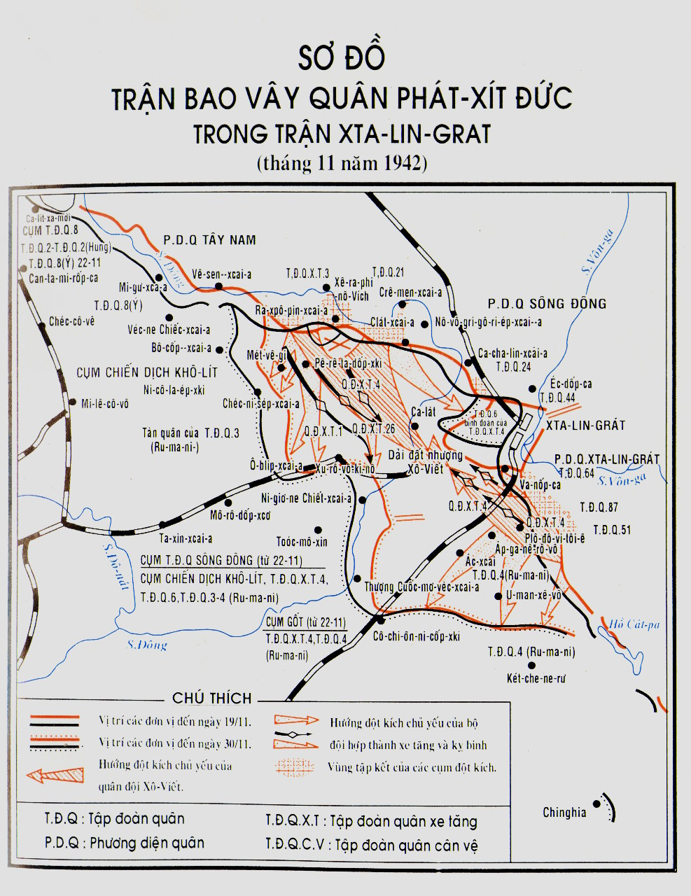

THÁNG 10-1942, rõ ràng bộ chỉ huy Đức đã buộc phải chuyển sang phòng ngự chiến lược trên toàn mặt trận phía đông. Quân của Hít-le đã bị thiệt hại vô cùng nặng nề, và đến lúc này mất hẳn khả năng tiến công. Kể từ khi bắt đầu cuộc chiến tranh, đây là lần phá sản thứ hai của tất cả các kế hoạch chiến tranh chống Liên Xô.
Bộ máy tuyên truyền của bọn phát-xít đã mở chiến dịch kêu gào “chuẩn bị cẩn thận hơn để kịp thời đón mùa đông thứ hai của Nga”. Bộ chỉ huy Đức chỉ thị cho bộ đội chúng chuẩn bị phòng ngự tích cực, vững chắc để tạo cho năm 1943 những điều kiện kết thúc chiến tranh một cách thắng lợi.
Cái gì đã làm cho bộ tổng chỉ huy quân Đức gặp tình hình phức tạp lúc bấy giờ?
Một mặt, giống hệt năm 1941, các mục tiêu chiến lược của chúng đều không đạt được, quân của chúng bị căng ra từ Biển Đen qua Bắc Cáp-ca-dơ, Xta-lin-grát, sông Đông, đến tận biển Ba-ren-xép; thiếu hẳn những đội dự bị chiến lược rảnh rang để có thể tự do sử dụng cả ở tiền tuyến và hậu phương; tinh thần bộ đội và nhân dân đều sa sút. Mặt khác, sức mạnh của Nhà nước Liên Xô ngày càng tăng rõ rệt, và Liên Xô đã khắc phục thắng lợi mọi khó khăn về kinh tế và quân sự.
Đầu tháng 11-1942, bọn Đức có trên mặt trận Xô-viết cả thảy 266 sư đoàn, tức gần 6,2 triệu người với hơn 70.000 khẩu pháo và cối, 6.600 xe tăng và pháo tiến công, 3.500 máy bay chiến đấu, 194 tàu chiến.
Cũng ở thời điểm ấy, bộ đội tác chiến của Liên Xô có 6,1 triệu người với 72.500 pháo và cối, 6.014 xe tăng và pháo tự hành, 3.088 máy bay chiến đấu. Trong đội dự bị chiến lược của Đại bản doanh có 25 sư đoàn bộ binh, 13 quân đoàn xe tăng và cơ giới, 7 lữ đoàn bộ binh độc lập và xe tăng.
Như thế là đến những ngày kết thúc thời kỳ đầu của chiến tranh, lực lượng so sánh đã bắt đầu thay đổi có lợi cho Liên Xô.
Điểm hơn hẳn của chúng ta còn thể hiện ở chỗ các lực lượng vũ trang Liên Xô đã biết giữ tuyệt mật ý định hành động của mình, biết tung tin nghi binh trên quy mô lớn buộc đối phương phải nhầm lẫn. Việc điều chỉnh đội hình và tập trung quân đều rất bí mật nên có thể giáng cho địch những đòn bất ngờ.
Bọn Hít-le cho rằng, sau những đợt chiến đấu vô cùng gay go ở Xta-lin-grát và ở Bắc Cáp-ca-dơ thuộc miền nam nước ta, Quân đội Liên Xô không đủ sức mở những trận tiến công lớn ở các vùng này nữa.
Trong mệnh lệnh tác chiến số 1 của bộ tổng chỉ huy lục quân Đức đề ngày 14-10-1942 có nói:
“Bản thân quân Nga qua những trận chiến đấu gần đây đã bị suy yếu nghiêm trọng, và trong mùa đông 1942-1943 không thể có những lực lượng lớn như họ đã có trong mùa đông vừa qua”.
Nhưng điều ấy là xa sự thật nhiều.
Theo chủ trương của Đại bản doanh, các hoạt động tích cực của bộ đội ta trong mùa hè và mùa thu 1942 ở hướng tây đánh vào cụm “Trung tâm” quân Đức là nhằm làm cho địch bị chệch phương hướng, gây ra cho chúng ấn tượng rằng chính đây là nơi chúng ta đang chuẩn bị chiến dịch mùa đông. Vì vậy, tháng 10, bộ chỉ huy Đức đã tập trung khá nhiều quân đánh vào các phương diện quân phía tây. Chúng điều một số sư đoàn xe tăng, cơ giới và bộ binh từ Lê-nin-grát đến khu vực Vê-li-ki-e Lu-ki. Chúng rút từ Pháp và Đức 8 sư đoàn đưa đến vùng Vi-tép-xcơ và Xmô-len-xcơ. Chúng lấy ở Vô-rô-ne-giơ và Gi-dơ-đra 2 sư đoàn xe tăng đưa về Yác-xê-vô và Rô-xláp. Kết quả là đầu tháng 11, chúng đã điều về tăng cường cho cụm “Trung tâm” 12 sư đoàn, không kể các phương tiện tăng cường khác.
Sở dĩ bọn Đức tính toán sai về chiến dịch như thế là do công tác trinh sát tồi. Chúng không thể phát hiện được sự chuẩn bị cho một cuộc phản công lớn của chúng ta ở khu vực Xta-lin-grát mà lực lượng tham gia là 11 tập đoàn quân cùng nhiều quân đoàn, lữ đoàn xe tăng, cơ giới, kỵ binh và nhiều đơn vị độc lập với 13.500 pháo và cối hơn 1.000 pháo phòng không, 115 tiểu đoàn pháo phản lực, gần 900 xe tăng, 1.115 máy bay (không tính loại PO-2).
Sau chiến tranh, I-ốt, cựu tham mưu trưởng chỉ đạo tác chiến của quân đội phát-xít Đức, đã thừa nhận rằng chúng không tài nào phát hiện được việc quân đội Liên Xô tập trung đánh vào sườn trái của tập đoàn quân Pao-luýt.
“Chúng tôi tuyệt nhiên không tưởng tượng được sức mạnh của quân Nga trong khu vực này. Trước đó, ở đây không có gì hết, thế mà bất thình lình chúng tôi bị nện một đòn mạnh có ý nghĩa quyết định”.
Khi quân ta bắt đầu phản công, kẻ thù ở miền nam nước ta chiếm lĩnh vị trí chiến dịch và chiến lược sau đây:
Ở vùng trung lưu sông Đông, Xta-lin-grát và phía nam hồ Sác-pa, lực lượng cơ bản của cụm “B” đang hoạt động gồm tập đoàn quân 8 người Ý, tập đoàn quân 3 và 4 người Ru-ma-ni, tập đoàn quân 6 và tập đoàn quân xe tăng 4 người Đức. Trung bình mỗi sư đoàn phụ trách 15-20 km.
Cánh quân ấy gồm hơn 1 triệu người, 675 xe tăng và pháo tiến công, hơn 10.000 pháo và cối. Về số lượng thì lực lượng hai bên xấp xỉ nhau, bên ta có trội hơn một phần về xe tăng.
Phi đoàn không quân 4 và quân đoàn không quân 8 yểm hộ cho cụm “B”.
Chủ trương tiêu diệt cụm tập đoàn quân “B”, Bộ tổng tư lệnh Liên Xô xuất phát từ chỗ cho rằng tiêu diệt được quân địch ở khu vực Xta-lin-grát thì bọn ở Bắc Cáp-ca-dơ sẽ lâm nguy, chúng sẽ hoặc là phải vội vã rút lui, hoặc là phải đánh nhau trong điều kiện bị vây hãm.
Sau khi I.V. Xta-lin mất, có xuất hiện thắc mắc muốn biết rằng ai là tác giả của kế hoạch phản công quy mô lớn, có hiệu suất và thắng lợi to lớn ấy? Mặc dầu câu hỏi ấy giờ đây có thể là không có ý nghĩa gì đặc biệt và ở các phần trên tôi đã trình bày những chi tiết về chủ trương này, tôi vẫn xin bổ sung đôi điểm.
Có ý kiến cho rằng dự thảo đầu tiên của chiến dịch tiến công đã được Bộ Tổng tư lệnh vạch ra từ tháng 8-1942, song phương án ban đầu có tính chất hạn chế.
Thực ra đấy không phải là dự thảo của chiến dịch phản công tương lai mà chỉ là kế hoạch phản kích nhằm ngăn chặn quân địch trên các đường dẫn về Xta-lin-grát. Trong Bộ Tổng tư lệnh lúc đó, không ai nghĩ đến phương án lớn, vì chưa có lực lượng và phương tiện để hoạt động lớn.
Cũng có ý kiến là ngày 6-10, Hội đồng quân sự Phương diện quân Xta-lin-grát gửi lên Bộ Tổng tư lệnh bản đề nghị về tổ chức và tiến hành phản công theo sáng kiến riêng của mình.
Về vấn đề này A.M. Va-xi-lép-xki trả lời như sau:
“Rạng sáng ngày 6-10, tôi với N.N. Vô-rô-nốp và V.Đ. I-va-nốp... đến đài quan sát của tập đoàn quân 51. Ở đây chúng tôi nghe báo cáo của tư lệnh tập đoàn quân N.I. Tơ-ru-pha-nốp. Tối hôm ấy, đến sở chỉ huy phương diện quân gặp tư lệnh và ủy viên Hội đồng quân sự, chúng tôi lại thảo luận kế hoạch phản công sắp tới do Bộ Tổng tư lệnh đề xuất, và trong bộ tư lệnh không có ý kiến gì trái ngược về nguyên tắc đối với kế hoạch, nên đến đêm 6 rạng ngày 7 tháng 10, chúng tôi làm báo cáo gửi về Tổng tư lệnh.
Ngày 7-10, tôi thay mặt Bộ Tổng tư lệnh chỉ thị cho tư lệnh Phương diện quân sông Đông về việc chuẩn bị những dự kiến tương tự cho phương diện quân của mình”.
Tôi nghĩ rằng không cần nói thêm gì vào những điều Va-xi-lép-xki đã viết. Những lời đó đã xác minh rằng vai trò chủ yếu trong chủ trương phản công thuộc về Bộ Tổng tư lệnh và Bộ Tổng tham mưu.
Trong những bài nghiên cứu lịch sử có ghi rằng sau đó một thời gian tư lệnh Phương diện quân Tây-nam N.Ph. Va-tu-tin cũng gửi lên một kế hoạch phản công. Nảy ra những câu hỏi: sau đó là lúc nào, kế hoạch gì, kế hoạch của phương diện quân hay kế hoạch phản công chung.
Như mọi người đều biết, Phương diện quân Tây-nam mới được thành lập vào cuối tháng 10 mà lúc đó thì việc tập trung lực lượng và phương tiện theo kế hoạch phản công đã xong và kế hoạch chung của Bộ Tổng tư lệnh cũng được giải quyết rồi.
Điều cần nói ở đây là mỗi tư lệnh phương diện quân đều phải căn cứ vào thực tiễn và mọi quy định hiện hành mà vạch ra kế hoạch hành động cho phương diện quân của mình, đệ trình lên Bộ Tổng tư lệnh ở Mát-xcơ-va hay cho đại diện của Bộ ngay tại chỗ duyệt và tất nhiên trong đó trình bày cả dự kiến của mình về hiệp đồng với các đơn vị bạn và những yêu cầu đối với Bộ Tổng tư lệnh.
Để có thể nêu ý kiến về một chiến dịch có tính chất chiến lược hết sức lớn của ba phương diện quân như chiến dịch ở khu vực Xta-lin-grát, không phải chỉ cần căn cứ vào những kết luận về mặt tác chiến mà còn cần căn cứ vào những tính toán nhất định về vật chất kỹ thuật.
Ai ở đây có thể tính toán cụ thể lực lượng và phương tiện cho chiến dịch quy mô như vậy? Dĩ nhiên chỉ có cơ quan nào nắm trong tay số lượng và phương tiện vật chất ấy. Trong trường hợp này chỉ có thể là Đại bản doanh và Bộ Tổng tham mưu. Cần nhớ rằng Bộ Tổng tham mưu trong suốt cuộc chiến tranh đã là bộ máy làm việc có sáng tạo của Đại bản doanh, thiếu công tác tổ chức đầy sáng tạo của nó, không thể tiến hành dược một chiến dịch nào có quy mô chiến lược cả.
Rất rõ ràng Đại bản doanh và Bộ Tổng tham mưu trong quá trình chiến đấu đã nghiên cứu chu đáo những tin tình báo về địch do các phương diện quân và do bộ đội cung cấp, đã phân tích và kết luận về tính chất hành động của kẻ địch và của quân ta. Nó nghiên cứu ý kiến đề đạt của các cơ quan tham mưu, các tư lệnh phương diện quân, các binh chủng, quân chủng, phân tích tất cả các tài liệu ấy để hạ quyết tâm.
Do đó, một kế hoạch tiến hành chiến dịch với quy mô chiến lược chỉ có thể hình thành đầy đủ nếu có sự nỗ lực sáng tạo lâu dài của toàn quân, của tất cả các cơ quan tham mưu và các cán bộ chỉ huy.
Xin nhắc lại một lần nữa: vai trò cơ bản và quyết định trong việc chủ trương và bảo đảm toàn diện cuộc phản công ở Xta-lin-grát dứt khoát thuộc về Đại bản doanh Bộ Tổng tư lệnh tối cao và Bộ Tổng tham mưu.
Và công đầu trực tiếp tiêu diệt quân thù cũng dứt khoát thuộc về những người đánh mạnh, đánh trúng, dũng cảm, gan dạ, tinh thông kỹ thuật, sống mái với quân thù. Ở đây tôi muốn nói tới những chiến sĩ những người chỉ huy, những vị tướng lĩnh vinh quang của chúng ta đã vượt qua thử thách gay go của thời kỳ đầu chiến tranh và trong những ngày chuẩn bị phản công, họ đã hoàn toàn nắm quyền chủ động chiến đấu trong tay và đã đánh địch một đòn trời giáng.
Công tích của Đại bản doanh Bộ Tổng tư lệnh tối cao và Bộ Tổng tham mưu là ở chỗ hai cơ quan đó đã phân tích rất chính xác tất cả các nhân tố của chiến dịch rất quy mô này, thấy trước bước phát triển và sự kết thúc của nó. Do đó không nên nêu vấn đề tìm xem nhân vật nào là “tác giả” của ý đồ phản công.
Phương diện quân Tây-nam lúc bấy giờ do trung ương N.Ph. Va-tu-tin làm tư lệnh đã hoàn thành vai trò chủ yếu trong giai đoạn đầu của cuộc phản công.
Ở đây tôi thấy không phải trình bày chi tiết toàn bộ kế hoạch phản công và tiến trình chiến dịch, vì trong sử sách của chúng ta đã viết nhiều và căn bản là đúng. Tuy nhiên tôi cho rằng nên đi sâu vào một số điểm..
Phương diện quân Tây-nam đánh rất mãnh liệt, rất sâu từ các bàn đạp ở hữu ngạn sông Đông trong vùng Xê-ra-phi-mô-vích và Clét-xcai-a. Phương diện quân Xta-lin-grát tiến công từ khu vực hồ Sác-pa. Lực lượng xung kích của cả hai phương diện quân phải hợp điểm ở khu vực Ca-lát - dải đất nhượng Xô-viết, thực hành bao vây chặt lực lượng cơ bản của địch ở Xta-lin-grát.
Phương diện quân Tây-nam triển khai lực lượng chủ yếu của mình gồm tập đoàn quân 21 và tập đoàn quân xe tăng 5, một phần lực lượng của tập đoàn quân cận vệ 1 cùng nhiều phương diện đột phá mạnh trên các bàn đạp phía tây nam Xê-ra-phi-mô-vích và trong khu vực Clét-xcai-a. Từ các bàn đạp trên, nó phải tiến công đột phá trận địa phòng ngự của tập đoàn quân 3 Ru-ma-ni, và dùng những binh đoàn cơ động ra sức phát triển chiến đấu về phía đông nam nhằm tiến đến sông Đông ở khu vực Bôn-se-na-ba-tốp-xcai-a - Ca-lát. Sau khi đột phá thắng lợi, bộ đội của phương diện quân phải tiến đến phía sau cụm quân địch ở Xta-lin-grát và cắt đứt tất cả các đường rút lui của chúng về phía tây.
Nhiệm vụ bảo đảm mặt tây nam và tây cho các đơn vị xung kích của phương diện quân và tạo vành đai bao vây trên hướng ấy đã giao cho tập đoàn quân sườn phải của Phương diện quân Tây-nam, tập đoàn quân cận vệ 1 do trung tướng Đ.Đ. Lê-liu-sen-cô chỉ huy, sau đó giao thêm cho lực lượng cơ bản của tập đoàn quân xe tăng 5 do trung tướng P.L. Rô-ma-nen-cô chỉ huy. Hướng phát triển tiến công của các đơn vị này là về phía tây, tây nam, nam và đến ngày thứ ba của chiến dịch phải đến tuyến Vê-sen-xcai-a - Bô-cốp-xki và dọc sông Chia đến Ô-blíp-xcai-a.
Các tập đoàn quân không quân 2 và 17 do các thiếu tướng không quân K.N. Xmiếc-nốp, X.A. Crát-xốp-xki chỉ huy có nhiệm vụ yểm trợ cho hoạt động của bộ đội mặt đất Phương diện quân Tây-nam.
Phương diện quân sông Đông có nhiệm vụ đánh hai đòn bổ trợ. Đòn thứ nhất bằng lực lượng tập đoàn quân 65 đánh đồng thời với Phương diện quân Tây-nam từ phía đông Clét-xcai-a sang đông nam nhằm cuốn bớt trận địa phòng ngự của địch ở hữu ngạn sông Đông. Đòn thứ hai, với lực lượng của tập đoàn quân 24 tiến công từ Ca-cha-lin-xcai-a dọc tả ngạn sông Đông xuống phía nam theo hướng chung đến Véc-chi-a-si, nhằm chia cắt số quân địch đang hoạt động ở đoạn vòng bé của sông Đông ra khỏi đại quân của nó ở Xta-lin-grát.
Tập đoàn quân 66 cần đẩy mạnh hoạt động ở phía bắc Xta-lin-grát làm tê liệt hẳn quân địch ở đây và loại bỏ khả năng cơ động các đội dự bị của chúng. Tập đoàn quân không quân 16 do thiếu tướng không quân X.I. Ru-đen-cô chỉ huy có nhiệm vụ yểm hộ cho bộ đội mặt đất Phương diện quân sông Đông hoạt động.
Phương diện quân Xta-lin-grát với lực lượng xung kích gồm các tập đoàn quân 51, 57 và 64 tiến công trên chính diện từ I-va-nốp-ca đến mũi phía bắc hồ Bác-man-xác. Cánh xung kích này có nhiệm vụ chọc thủng trận địa phòng ngự của địch, tiếp tục đánh theo hướng tây bắc tiến đến khu vực Ca-lát - dải đất nhượng Xô-viết, ở đây hợp điểm với bộ đội Phương diện quân Tây-nam, hoàn thành hợp vây quân địch ở Xta-lin-grát.
Tập đoàn quân 51 dưới quyền chỉ huy của thiếu tướng N.I. Tơ-ru-pha-nốp tiến công từ những bàn đạp trên các eo đất giữa các hồ Sác pa, Sa-sa, Bác-man-xác có nhiệm vụ chọc thủng phòng ngự quân địch và dùng lực lượng cơ bản phát triển tiến công lên tây nam theo hướng chung đến Áp-ga-nê-rô-vô.
Tập đoàn quân 57 của tướng Ph.I. Tôn-bu-khin và tập đoàn quân 64 của tướng M.X. Su-mi-lốp tiến công từ khu vực I-va-nốp-ca theo hướng tây và tây bắc nhằm khóa chặt cánh quân địch ở phía nam.
Tập đoàn quân 62 của tướng V.I. Chui-cốp có nhiệm vụ phòng ngự tích cực làm tê liệt bọn địch đang hoạt động ngay trong thành phố; sẵn sàng chuyển sang tiến công.
Nhiệm vụ bảo đảm mặt tây nam các đơn vị xung kích thuộc Phương diện quân Xta-lin-grát và tạo vòng vây bên ngoài trên hướng này là của tập đoàn quân 51 (trong đó có quân đoàn kỵ binh 4 của tướng T.T. Sáp-kin). Tập đoàn quân này phải tiến công vào phía tây nam theo hướng chung đến Áp-ga-nê-rô-vô, Cô-chi-ôn-ni-cô-vô. Bộ đội của Phương diện quân Xta-lin-grát được tập đoàn quân không quân 8 của thiếu tướng không quân T.T. Khri-u-kin yểm hộ.
Trong việc chuẩn bị phản công, cần vận chuyển một khối lượng hết sức lớn bộ đội và phương tiện vật chất, kỹ thuật cho tất cả các phương diện quân, đặc biệt cho Phương diện quân Tây-nam vừa được thành lập lại. Chúng ta cần thấy hết thành tích của Bộ Tổng tham mưu và bộ tham mưu hậu cần Hồng quân. Họ đã hoàn thành một cách rực rỡ việc tập trung phương tiện và lực lượng cho chiến dịch.
Hơn 27.000 ô-tô được huy động để chuyên chở bộ đội. Hàng ngày đường sắt phải kéo đi 1.300 toa hàng. Bộ đội và hàng hóa cho Phương diện quân Xta-lin-grát phải chuyên chở trong điều kiện đặc biệt phức tạp là có băng mùa thu trôi trên sông Vôn-ga. Từ 1 đến 19 tháng 11 đã đưa qua sông Vôn-ga 160.000 chiến sĩ, 16.000 ngựa, 430 xe tăng, 600 khẩu đại pháo, 14.000 ô-tô, gần 7.000 tấn đạn.
Cuối tháng 10 đầu tháng 11, tôi và Va-xi-lép-xki cùng mấy đồng chí đại diện của Đại bản doanh đã xuống các đơn vị giúp cán bộ chỉ huy, các cơ quan tham mưu và các đơn vị nắm vững kế hoạch và phương thức thực hành phản công.
Các hội nghị tổng kết ở các bộ tham mưu phương diện quân đã xác định rằng công tác phức tạp và khó khăn ấy được cán bộ chỉ huy và cán bộ chính trị tiến hành với ý thức trách nhiệm cao và tinh thần chủ động, sáng tạo.
Từ 1 đến 4 tháng 11, chúng tôi kiểm tra và sửa chữa kế hoạch của Phương diện quân Tây-nam, sau đó kiểm tra chi tiết và phối hợp các kế hoạch hành động của tập đoàn quân 21 và tập đoàn quân xe tăng 5.
Khi nghiên cứu kế hoạch hoạt động, tại bộ tham mưu Phương diện quân Tây-nam, ngoài tôi ra còn có các đại diện của Đại bản doanh: về các vấn đề pháo binh có tướng N.N. Vô-rô-nốp, về không quân có các tướng A.A. Nô-vi-cốp và A.N. Gô-lô-va-nốp, về bộ đội thiết giáp có tướng Ya.N. Phê-đô-ren-cô. Các đồng chí đó giúp chúng tôi đi sâu vào vấn đề sử dụng và hiệp đồng các binh chủng quan trọng nhất.
Ngày 4-11, tại bộ tham mưu tập đoàn quân 21 đã tổ chức kiểm tra công việc chuẩn bị tiến công của tập đoàn quân 21 và 65. Trong cuộc họp ấy còn mời cả bộ tư lệnh Phương diện quân sông Đông và tập đoàn quân 65. Lúc này A.M. Va-xi-lép-xki đang ở Phương diện quân Xta-lin-grát kiểm tra việc chuẩn bị của tập đoàn quân 51 và 64. Tôi hẹn với Va-xi-lép-xki là tôi cũng đến đó.
Trong khi làm việc tại các đơn vị, chúng tôi nghiên cứu tỉ mỉ tin tức về địch, tính chất phòng ngự, cách bố trí lực lượng cơ bản và hệ thống hỏa lực tổng hợp, số lượng và nơi bố trí phương tiện chống tăng và các điểm tựa chống tăng của chúng.
Chúng tôi đã xác định phương thức và kế hoạch chuẩn bị của pháo binh, mật độ của nó, xác suất tiêu diệt và chế áp trận địa phòng ngự địch, phương thức pháo đi cùng đội hình chiến đấu khi tiến công. Chúng tôi thông qua kế hoạch hiệp đồng của không quân và pháo binh, phân định mục tiêu cho hai loại này, vạch kế hoạch và phương thức hiệp đồng với bộ đội xe tăng khi đột phá và sau khi đưa nó vào đột phá. Chúng tôi đã xác định việc hiệp đồng với các đơn vị ở hai bên sườn, đặc biệt trong lúc đưa bộ đội cơ động vào đột phá và chiến đấu trong chiều sâu của trận địa phòng ngự địch.
Chúng tôi còn chỉ cho các đơn vị: cần tìm hiểu thêm những gì về địch, cần chủ trương những gì nữa, cần làm thêm những gì trực tiếp trên trận địa, và làm gì để động viên bộ đội.
Tất cả cán bộ chỉ huy và cán bộ chính trị đều nhất trí là phải hết sức nhanh chóng chọc thủng trận địa phòng ngự chiến thuật của địch, đánh mạnh làm cho chúng bị bất ngờ và nhanh chóng đưa thê đội hai vào chiến đấu để phát triển đột phá chiến thuật thành đột phá chiến dịch.
Khi nghiên cứu nhiệm vụ tại các quân đoàn, các sư đoàn, trung đoàn, chúng tôi yêu cầu cán bộ chỉ huy suy nghĩ kỹ để quán triệt nhiệm vụ được giao và phương thức hiệp đồng với phương tiện tăng cường, với các đơn vị bạn, đặc biệt trong chiều sâu trận địa phòng ngự địch.
Đối với cán bộ chỉ huy, cán bộ chính trị tất cả các cấp, công việc ấy rõ ràng là khó và đòi hỏi phải mang hết tâm sức, tài năng ra làm việc khẩn trương, nhưng nó sẽ dần dần sáng tỏ thêm trong quá trình chiến đấu.
Các cơ quan chính trị, các tổ chức Đảng và Đoàn đã ra sức triển khai công tác chính trị và công tác Đảng trong các đơn vị. Công tác quan trọng ấy được sự chỉ đạo tài giỏi của Hội đồng quân sự phương diện quân và cục chính trị do tướng V.M. Ru-đa-cốp phụ trách.
Để hoàn thành việc đặt kế hoạch tiến công cho Phương diện quân Xta-lin-grát, như đã thống nhất với Va-xi-lép-xki, tôi đến sở chỉ huy tập đoàn quân 57 ở Ta-chi-a-nốp-ca sáng ngày 10-11. Lúc ấy, ngoài Hội đồng quân sự còn có M.M. Pô-pốp, M.X. Su-mi-lốp, Ph.I. Tôn-bu-khin, N.I. Tơ-ru-pha-nốp, các quân đoàn trưởng V.T. Vôn-xki, T.T. Sáp-kin và nhiều vị tướng khác của phương diện quân. Trước khi khai mạc hội nghị, tôi cùng Va-xi-lép-xki, các tư lệnh tập đoàn quân 51, 57 N.I. Tơ-ru-pha-nốp và Ph.I. Tôn-bu-khin, M.M. Pô-pốp và các tướng khác đã ra trận địa của các tập đoàn quân ấy để xem kỹ nơi chủ lực phương diện quân sẽ triển khai tiến công.
Sau khi kiểm tra, chúng tôi xem xét vấn đề hiệp đồng của phương diện quân này với Phương diện quân Tây-nam, thống nhất kỹ thuật hợp kích của các đơn vị phái đi trước ở khu vực Ca-lát, kế hoạch hiệp đồng của các đơn vị sau khi đã bao vây địch và những vấn đề khác của chiến dịch.
Sau đó chúng tôi kiểm tra kế hoạch của các tập đoàn quân do các tư lệnh tập đoàn quân và các quân đoàn trưởng báo cáo.
Tối 11-11, tôi báo cáo với Tổng tư lệnh theo đường điện thoại:
“Tôi đã làm việc hai ngày liền ở chỗ đồng chí Ê-rê-men-cô. Đã trực tiếp đến quan sát trận địa địch ở phía trước tập đoàn quân 51 và 57. Đã làm việc tỉ mỉ với các sư đoàn trường, quân đoàn trưởng, tư lệnh tập đoàn quân về những nhiệm vụ theo kế hoạch “U-ran”. Công việc chuẩn cho “U-ran” ở chỗ Tôn-bu-khin được tiến hành tốt hơn cả...
Tôi đã ra lệnh đi trinh sát chiến đấu và trên cơ sở tin tức thu được đã xác định thêm kế hoạch chiến đấu và quyết tâm của tư lệnh tập đoàn quân.
Đồng chí Pô-pốp làm việc khá, thành thạo trong nhiệm vụ.
Hai sư đoàn bộ binh do Đại bản doanh chuyển cho Ê-rê-men-cô (87 và 315) chưa lên đường vì cho đến nay chưa nhận được phương tiện vận tải và ngựa.
Trong số các lữ đoàn cơ giới, mới đến có một.
Việc cung cấp và chuyên chở đạn dược còn kém. Đạn cho “U-ran” rất thiếu.
Không thể chuẩn bị kịp theo thời hạn quy định của chiến dịch. Tôi đã ra lệnh phải sẵn sàng hành động trong ngày 15-11-1942.
Cần gấp rút gởi cho Ê-rê-men-cô 100 tấn nhiên liệu dùng cho mùa đông vì thiếu nó thì các đơn vị cơ giới không hoạt động được; cho các sư đoàn bộ binh 87 và 315 tới ngay; gấp rút mang quần áo cho các tập đoàn quân 51 và 57; quần áo và đạn dược cần có cho bộ đội trước ngày 14-11-1942.
Côn-xtan-tl-nốp[1]
Số 4657
11.11.1942”
Cần nói rằng Tổng tư lệnh thường rất coi trọng vấn đề không quân bảo đảm chiến dịch. Nhận được báo cáo của tôi qua đó biết rằng việc chuẩn bị không quân bảo đảm cho trận phản công không đạt yêu cầu Tổng tư lệnh gởi cho tôi bức điện sau đây:
“Đồng chí Côn-xtan-ti-nốp.
Nếu ở chỗ Ê-rê-men-cô và Va-tu-tin việc chuẩn bị không quân cho chiến dịch không đạt yêu cầu thì chiến dịch sẽ thất bại. Kinh nghiệm đánh nhau với bọn Đức cho thấy, chỉ thắng lợi khi chúng ta có ưu thế trên không. Trong trường hợp này không quân chúng ta phải thi hành ba nhiệm vụ:
Thứ nhất, tập trung hoạt động vào khu vực các đơn vị xung kích của ta đang tiến công để chế áp không quân Đức và bảo vệ vững chắc bộ đội ta.
Thứ hai, mở đường cho các đơn vị tiến công bằng cách ném bom có hệ thống làm cho hàng ngũ chúng rối loạn, không cho chúng bám vào các tuyến phòng ngự gần nhất.
Thứ ba, truy kích quân địch rút lui bằng cách ném bom, bắn phá có hệ thống làm cho hàng ngũ chúng hoàn toàn bị rối loạn, không cho chúng bám vào các tuyến phòng ngự gần nhất.
Nếu Nô-vi-cốp cho rằng không quân ta hiện giờ không đủ sức hoàn thành các nhiệm vụ đó thì tốt nhất là hoãn chiến dịch lại một ít thời gian và ra sức tăng thêm lực lượng không quân.
Đồng chí trao đổi và giải thích cho Nô-vi-cốp và Vô-rô-giây-kin về việc này và báo cho tôi biết ý kiến chung của đồng chí.
Va-li-xi-ép[2]
12.11.1942 - 4 giờ
Số 170686”
Làm xong kế hoạch cho bộ đội Phương diện quân Xta-lin-grát, tôi và Va-xi-lép-xki gọi dây nói báo cáo với Xta-lin rằng, chúng tôi cần trực tiếp báo cáo một số ý kiến liên quan tới chiến dịch.
Ngày 13-11, chúng tôi đến chỗ Xta-lin. Người có vẻ thoải mái, hỏi tỉ mỉ về tình hình công việc ở Xta-lin-grát trong quá trình chuẩn bì phản công.
Tình hình cơ bản mà chúng tôi báo cáo đại thể như sau.
Về so sánh lực lượng cả về chất lượng và số lượng chúng tôi nêu rõ là ở khu vực sẽ mở các mũi tiến công chủ yếu của ta (các Phương diện quân Tây-nam và Xta-lin-grát), cơ bản vẫn do quân Ru-ma-ni phòng ngự. Theo lời khai của bọn tù binh thì sức chiến đấu của chúng không cao. Về số lượng trên hướng ấy chúng ta sẽ có ưu thế đáng kể, nêu lúc quân ta tiến công, bọn Đức không điều các đội dự bị của chúng tới; hiện nay trinh sát của ta không phát hiện thấy một sự điều động nào. Tập đoàn quân 6 của Pao-luýt và chủ lực của tập đoàn quân xe tăng 4 đang ở khu vực Xta-lin-grát và đang bị Phương diện quân sông Đông và Phương diện quân Xta-lin-grát kiềm chế.
Các đơn vị chúng ta, theo đúng kế hoạch, đang tập trung ở những khu vực quy định; nhìn chung, trinh sát của địch không phát hiện được sự điều động này. Chúng ta đã áp dụng mọi biện pháp để giữ bí mật hơn nữa việc cơ động lực lượng và phương tiện.
Nhiệm vụ của phương diện quân, các tập đoàn quân và các binh đoàn đã quy định xong. Sự hiệp đồng của tất cả các loại vũ khí đã được bàn và giao ngay tại thực địa. Kế hoạch hợp điểm theo dự án của các mũi xung kích của Phương diện quân Tây-nam và Phương diện quân Xta-lin-grát đã được bàn định kỹ với các tư lệnh, các cơ quan tham mưu phương diện quân, tập đoàn quân và cả với các đơn vị nào sẽ tiến đến khu vực Dải đất nhượng Xô-viết - Ca-lát. Trong các tập đoàn quân không quân, việc chuẩn bị có thể sẽ hoàn thành vào ngày 15-11.
Chúng tôi có thể nói là đã làm xong các phương án lập vòng trong để vây quân địch ở Xta-lin-grát và vòng ngoài để bảo đảm cho việc thanh toán bọn bị vây.
Việc tiếp tế đạn, chất đốt và quần áo mùa đông bị chậm đôi chút, nhưng ta có đủ cơ sở để cho rằng cuối ngày 16, 17 tháng 11 bộ đội sẽ nhận được.
Ngay 19-11, Phương diện quân sông Đông và Tây-nam có thể mở màn chiến dịch phản công, Phương diện quân Xta-lin-grát thì sau đó một ngày đêm.
Sở dĩ có thời hạn khác nhau là vì nhiệm vụ của Phương diện quân Tây-nam phức tạp hơn. Nó ở khá xa khu vực Ca-lát-dải đất nhượng Xô-viết, và còn phải vượt sông Đông.
Tổng tư lệnh chăm chú lắng nghe chúng tôi. Đồng chí thong thả đưa tẩu lên hút, vuốt nhẹ bộ ria và không lần nào cắt ngang báo cáo của chúng tôi. Qua các cử chỉ đó, chúng tôi thấy đồng chí có vẻ hài lòng. Chiến dịch Xta-lin-grát là dấu hiệu chứng tỏ quyền chủ động đã vào tay quân đội Xô-viết. Tất cả chúng tôi tin tưởng vào thắng lợi của cuộc phản công sắp tới, mà thành quả của nó có thể có nhiều ý nghĩa đối với tổ quốc chúng ta.
Trong khi chúng tôi báo cáo thì các ủy viên Hội đồng quốc phòng và vài ủy viên Bộ chính trị tới để chuẩn bị họp. Chúng tôi phải nói lại những vấn đề cơ bản đã báo cáo với một số đồng chí đến muộn.
Sau khi bàn thêm đôi chút, Tổng tư lệnh phê chuẩn toàn bộ kế hoạch phản công.
Tôi và Va-xi-lép-xki báo cáo với Tổng tư lệnh rằng, khi tình hình ở Xta-lin-grát và Bắc Cáp-ca-dơ trở nên nguy kịch, bọn Đức có thể buộc phải điều một phần bộ đội ở các khu vực khác, đặc biệt ở khu vực Vi-a-dơ-ma về ứng cứu cánh quân phía nam.
Muốn cho việc này không xảy ra, cần gấp rút chuẩn bị và mở chiến dịch tiến công vào khu vực bắc Vi-a-dơ-ma và trước hết phải tiêu diệt quân Đức ở khu vực mỏm đất nhô Rơ-giép. Chúng tôi đề nghị sử dụng vào chiến dịch này bộ đội thuộc hai Phương diện quân miền Tây và Ca-li-nin.
- Việc đó tốt đấy - Xta-lin nói - nhưng trong hai đồng chí ai đảm nhiệm việc này.
Tôi và Va-xi-lép-xki đã thống nhất trước với nhau về đề nghị này nên tôi nói:
- Chiến dịch Xta-lin-grát về tất cả các mặt đã chuẩn bị xong. Va-xi-lép-xki có thể đảm nhiệm việc phối hợp hành động của bộ đội ở Xta-lin-grát, tôi có thể lãnh trách nhiệm chuẩn bị phản công của hai Phương diện quân miền Tây và Ca-li-nin.
Tổng tư lệnh đồng ý với đề nghị của chúng tôi và nói:
- Sáng mai đồng chí bay về ngay Xta-lin-grát kiểm tra một lần nữa việc chuẩn bị mở màn chiến dịch của bộ đội và cán bộ chỉ huy.
Ngày 14-11, tôi lại có mặt ở các đơn vị của N.Ph. Va-tu-tin. Va-xi-lép-xki thì đến chỗ A.I. Ê-rê-men-cô. Hôm sau tôi nhận được bức điện sau đây của Xta-lin:
“Gửi đồng chí Côn-xtan-ti-nốp.
Ngày sơ tán của Phê-đô-rốp và I-va-nốp[3] có thể do đồng chí xem và quy định, sau đó báo cáo với tôi khi về Mát-xcơ-va. Nếu đồng chí thấy ai trong số hai người đó cần sơ tán sớm hơn hay muộn hơn một hai ngày, tôi ủy quyền đồng chí quyết định và vấn đề đó do đồng chí định liệu.
Va-xi-li-ép
13 giờ 10
15. 11. 1942”
Sau khi trao đổi với Va-xi-lép-xki, tôi quy định Phương diện quân Tây-nam và tập đoàn quân 65 của Phương diện quân sông Đông bắt đầu tiến công vào ngày 19-11, còn Phương diện quân Xta-lin-grát vào ngày 20-11. Tổng tư lệnh duyệt y quyết định của chúng tôi.
Ngày 17-11, tôi được gọi về Đại bản doanh để chuẩn bị chiến dịch của các Phương diện quân miền tây và Ca-li-nin.
Ngày 19-11, lúc 7 giờ 30, bộ đội Phương diện quân Tây-nam tiến công mãnh liệt chọc thủng trận địa phòng ngự của tập đoàn quân 3 Ru-ma-ni cùng một lúc trên hai khu vực: tập đoàn quân xe tăng 5 dưới sự chỉ huy của trung tướng P.L. Rô-ma-nen-cô từ bàn đạp ở Tây-nam Xê-ra-phi-mô-vích và tập đoàn quân 21 của tướng I.M. Chi-xti-a-cốp từ bàn đạp ở Clét-xcai-a.
Địch không chống đỡ nổi đòn tiến công này, đã hoảng hốt rút lui hoặc đầu hàng cả. Các đơn vị Đức ở sau lưng quân Ru-ma-ni đã phản kích rất mạnh hòng chặn bước tiến quân ta nhưng bị hai quân đoàn xe tăng 1 và 26 ra quân đánh cho tan tác. Đột phá chiến thuật ở khu vực của Phương diện quân Tây-nam thế là hoàn thành.
Trước thế nào, thì nay P.L. Rô-ma-nen-cô, tư lệnh tập đoàn quân vẫn thế. Cần nói rằng đó là một con người dũng cảm, một cán bộ chỉ huy rất giỏi. Xét về cá tính, đồng chí ấy rất thích hợp với những hành động mãnh liệt như vậy.
Để chống lại tập đoàn quân 21 của tướng I.M. Chi-xti-a-cốp, địch tung đội dự bị ra gồm sư đoàn 1 Ru-ma-ni, 2 sư đoàn xe tăng 14, 22 Đức và sư đoàn kỵ binh 7 vì chúng cho rằng chính ở đây là mũi tiến công chủ yếu của ta. Nhưng sau đó sư đoàn xe tăng 22 Đức và sư đoàn xe tăng 1 Ru-ma-ni lại phải triển khai để đối phó với quân đoàn xe tăng 1 của tập đoàn quân xe tăng 5, do thiếu tướng V.V. Bút-cốp chỉ huy.
Quân đoàn xe tăng 26 do thiếu tướng A.G. Rô-đin chỉ huy đã đánh quỵ sư đoàn xe tăng 1 và tiêu diệt bộ tham mưu quân đoàn 5 Ru-ma-ni. Một phần quân lính của chúng hoảng hốt tháo chạy, còn phần lớn đầu hàng.
Vừa mở màn chiến dịch, quân ta đã tiêu diệt hoàn toàn và thực tế xóa bỏ phiên hiệu của các lực lượng cơ bản của quân đoàn 3 Ru-ma-ni phòng ngự đối diện với Phương diện quân Tây-nam. Những đội dự bị của Đức được điều đến ứng cứu chúng cũng bị tiêu diệt.
Quân đoàn xe tăng 26 của A.G. Rô-đin và quân đoàn xe tăng 4 của A.G. Cráp-chen-cô liền tiến rất nhanh về khu vực Ca-lát để hợp điểm với quân đoàn cơ giới 4 của Phương diện quân Xta-lin-grát.
Bên trái của tập đoàn quân 21, có tập đoàn quân 65 của Phương diện quân sông Đông đang tiến công dưới quyền chỉ huy của trung tướng P.I. Ba-tốp.
Trong đêm rạng ngày 23-11, chi đội phái đi trước của quân đoàn xe tăng 26 do trung tá G.N. Phi-líp-pốp lãnh đạo đã đột kích táo bạo, chiếm được chiếc cầu bắc qua sông Đông.
Đội gác cầu của Đức không một chút nghi ngờ, yên tâm chờ phiên gác sau. Nhưng chính đội phái đi trước của G.N. Phi-líp-pốp đã đến đổi gác. Bọn lính của Hít-le tiếp nhận đội này, yên trí đây là đơn vị huấn luyện của chúng dược trang bị xe tăng và chiến lợi phẩm của Nga. Một trận giao chiến ngắn ngủi xảy ra và chiếc cầu nằm gọn trong tay quân ta. Kẻ địch đôi lần định đẩy lùi quân của G.N. Phi-líp-pốp ra khỏi cầu, nhưng chúng không làm được.
Trong khi giữ cầu, G.N. Phi-líp-pốp quyết định cử một toán xe tăng do trung tá N.M. Phi-líp-pen-cô chỉ huy đánh chiếm Ca-lát. Từ đó đến Ca-lát còn 2 km. Trung tá N.M. Phi-líp-pen-cô, mặc dầu với số quân ít, đã hạ quyết tâm công kích thành phố trong hành tiến. Trận chiến đấu chiếm Ca-lát kéo dài suốt đêm. Bọn Đức ngoan cố chống cự, nhưng không bao lâu, các đơn vị đi trước của chủ lực quân đoàn đã đến, và thành phố trở về tay quân ta.
Ngày 24-11, các tập đoàn quân 21 và 5 của Phương diện quân Tây-nam đã tiêu diệt cánh quân Ru-ma-ni bị vây hãm, bắt hơn 3 vạn lính, sĩ quan, tướng và thu rất nhiều khí tài chiến đấu.
Dưới đây là những điều ghi chép trong nhật ký của tên sĩ quan Ru-ma-ni, chủ nhiệm khí tượng của lữ đoàn pháo binh thuộc sư đoàn 6, nói lên tình hình những ngày ấy.
“Ngày 9-11.
Người Nga khai hỏa như vũ bão vào sườn trái của sư đoàn 5. Tôi chưa hề thấy hỏa lực mạnh như thế... đạn pháo nổ làm rung chuyển đất đập tan những cửa kính... Trên điểm cao 163 xuất hiện xe tăng đối phương đi về phía Pa-xpô-pin-xcai-a. Không mấy chốc được tin báo, các xe tăng đó đang chạy hết tốc lực qua các trận địa và vào đến làng. Pháo ta không gây cho đối phương thiệt hại nào... Những chiếc xe tăng nặng 52 tấn ấy đang chạy với tốc độ tối đa, có vỏ thép rất dày mà đạn ta không xuyên qua được.
Ngày 20-11
Từ sáng sớm trên khu vực sư đoàn 13 “Prút”, đối phương bắt đầu pháo hỏa chuẩn bị mãnh liệt... Sư đoàn 13 bị tiêu diệt hoàn toàn. Xe tăng chạy tới Grôm-ki, đến làng Ép-xtơ-ra-tốp-xcai-a và thọc sâu vào lưng của ta ở Pê-rê-la-đốp-xki. Bộ chỉ huy quân đoàn 5 lúc ấy đang ở Pê-rê-la-đốp-xki. Mất hẳn liên lạc với bộ chỉ huy cấp trên. Sư đoàn 6 nhận được chỉ thị xa lạ làm sao: “Bằng bất cứ giá nào cũng phải giữ đến người lính cuối cùng”. Hiện giờ chúng tôi đang bị địch bao vây chặt. Sư 5, sư 6, sư 15 và số còn lại của sư 13 đang nằm trong cái túi.
Ngày 21-11
Từ sáng, tình hình chúng ta vẫn nguy kịch. Chúng tôi bị vây... Ở Gô-lốp-xki tình hình cũng tồi lắm. Bây giờ là 11 giờ 05.
Chúng tôi không biết phải làm gì. Ở đây đang tập họp sĩ quan của sư 13 và 15 mà đơn vị của họ đã bị diệt.
Ôi là tình thế!
Bi thảm, nhưng đó là cái dĩ nhiên.
Đồng đội của tôi mang ảnh vợ con ra xem. Tôi cũng đau lòng nhớ lại mẹ, em và bà con thân thuộc. Chúng tôi mặc tất cả quần áo tốt nhất hiện có, mặc cả hai bộ một lúc và nghĩ rằng trận đánh sẽ kết thúc rất đau đớn... Trao đổi và tranh cãi với nhau khá nhiều về tình hình lúc này... Nhưng dù sao cũng vẫn còn hy vọng... chúng tôi cho rằng quân Đức sẽ đến ứng cứu chúng tôi.
Bây giờ là 13 giờ 30. Tướng Ma-da-ri-ni, sư trưởng sư 5 nhận trách nhiệm chỉ huy tất cả các sư đoàn. Vòng vây quanh các đơn vị chúng tôi bắt đầu siết lại. Hôm nay là ngày lễ tôn giáo lớn. Chúng tôi hay cha ông chúng tôi đã phạm tội gì với Chúa? Tại sao chúng tôi phải chịu cảnh đau khổ này? Chúng tôi, ba sĩ quan, đang bàn về tình hình và kết luận, không có cách nào tránh khỏi tai họa. Tin không lành từ Ô-xi-nốp-ki bắt đầu được xác định là đúng. Tổ sĩ quan của trung đoàn hạng nặng số 5 bỏ trốn cũng vừa đến đây.
Khuya đó các sư trưởng và trung đoàn trưởng lại tập họp để hạ quyết tâm cuối cùng. Họ thảo luận hai phương án:
1) Chọc thủng vòng vây.
2) Đầu hàng.
Sau khi thảo luận khá lâu, mọi người chấp nhận phương án thứ hai - đầu hàng.
Có tin: phía Nga cho người đến kêu gọi đầu hàng... ”
Phần ghi chép gián đoạn ở đây. Nhưng không cần đọc thêm chúng ta cũng biết rằng toàn bộ số quân Ru-ma-ni đã đầu hàng.
Tổng tư lệnh rất băn khoăn về hoạt động của cánh phải Phương diện quân sông Đông. Cuối ngày 23-11, người đã gửi chỉ thị dưới đây cho tư lệnh Phương diện quân sông Đông, K.K. Rô-cô-xốp-xki.
“Đồng chí Rô-cô-xốp-xki, đồng gửi đồng chí Va-xi-lép-xki
Theo báo cáo của Va-xi-lép-xki, sư đoàn mô-tô hóa 3 và sư đoàn xe tăng 16 của bọn Đức đã rút toàn bộ hoặc bộ phận ra khỏi khu vực thuộc phương diện quân của đồng chí và đang đánh vào chính diện tập đoàn quân 21. Tình hình ấy rất thuận lợi để tất cả các tập đoàn quân của phương diện quân đồng chí chuyển sang các hành động tích cực. Ga-la-nin hành động chậm mất rồi. Chỉ thị cho đồng chí ấy chiếm Véc-chi-a-si trước ngày 25-11. Chỉ thị cho cả Gia-đốp tích cực hoạt động thu hút địch về phía mình. Giải thích thật đầy đủ cho Ba-tốp rằng trong tình hình này có thể hoạt động khẩn trương hơn.
I. Xta-lin
23. 11. 1942
19 giờ 40”
Nhờ tập đoàn quân 21 do thiếu tướng I.M. Chi-xti-a-cốp chỉ huy tiến công thắng lợi và nhờ kết quả của những chủ trương mà Phương diện quân sông Đông đã thi hành, tình hình của tập đoàn quân 65 được chấn chỉnh lại. Nó đã tiến mạnh hơn.
Ba ngày sau tập đoàn quân 24 của Phương diện quân sông Đông mới tiến công theo dọc tả ngạn sông Đông. Nhưng nó không giành được thắng lợi vì yếu quá.
Các tập đoàn quân 51, 57, 64 của Phương diện quân Xta-lin-grát bắt đầu hoạt động ngày 20-11, chậm một ngày đêm so với Phương diện quân Tây-nam và sông Đông.
Tập đoàn quân 51 do thiếu tướng N.I. Tơ-ru-pha-nốp chỉ huy đã tiến công theo hướng chung đến Plô-đô-vi-tôi-ê và tiến đến Áp-ga-nê-rô-vô.
Tập đoàn quân 57 do thiếu tướng Ph.I. Tôn-bu-khin chỉ huy tiến công theo hướng chung đến Ca-lát.
Tập đoàn quân 64 dưới sự chỉ huy của trung tướng M.X. Su-mi-lốp đã xuất phát từ khu vực I-va-nốp-ca, dùng cánh quân trái của mình đánh mạnh theo hướng chung đến Ga-vri-lốp-ca, Vác-va-rốp-ca, hiệp đồng với cánh phải của tập đoàn quân 57.
Sau khi đột phá thắng lợi trận địa phòng ngự của địch và tiêu diệt các sư đoàn Ru-ma-ni 1, 2, 10, 20 cùng sư đoàn mô-tô hóa của Đức tại khu vực của tập đoàn quân 51, quân đoàn cơ giới số 4 của tướng V.T. Vôn-xki đã bước vào chiến đấu và đột phá được vào Plô-đô-vi-tôi-ê. Trong dải hoạt động của tập đoàn quân 57 có quân đoàn xe tăng của thiếu tướng T.I. Ta-na-xchi-sin cũng bước vào chiến đấu. Quân đoàn kỵ binh 4 của tướng T.T. Sáp-kin bắt đầu hoạt động và ngay trong ngày ấy chiếm được nhà ga Áp-ga-nê-rô-vô.
Quân địch âm mưu ngăn chặn bước tiến của tập đoàn quân 57 về Ca-lát nên đã rút bớt ở Xta-lin-grát hai sư đoàn xe tăng 16 và 24 đưa về đấy. Nhưng chậm mất rồi, vả lại chúng cũng không đủ sức chịu đựng những đòn tiến công mãnh liệt của bộ đội hai Phương diện quân Tây-nam và Xta-lin-grát. Các đơn vị xe tăng của hai phương diện quân này lúc 16 giờ ngày 23-11, đã đến khu vực dải đất nhượng Xô-viết, ở đây lữ đoàn xe tăng 45 của quân đoàn xe tăng 4 dưới sự chỉ huy của trung tá P.K. Gít-cốp là đơn vị đầu tiên bắt liên lạc được với lữ đoàn cơ giới 30 của trung tá M.I. Rô-đi-ô-nốp, thuộc quân đoàn cơ giới 4.
Vượt sông Đông xong, quân đoàn xe tăng 4 của Phương diện quân Tây-nam dưới quyền chỉ huy của tướng A.G. Cráp-chen-cô và quân đoàn cơ giới 4 thuộc Phương diện quân Xta-lin-grát của tướng V.T. Vôn-xki đã gặp nhau ở khu vực dải đất nhượng Xô-viết, do đó vây chặt được cụm quân địch ở Xta-lin-grát trên cồn đất giữa sông Đông và sông Vôn-ga.
Sau đó các tập đoàn quân 64, 57, 21, 65, 24, 66 lại tiếp tục phát triển tiến công theo hướng chung đến Xta-lin-grát, khép chặt vòng vây địch ở bên trong bằng hai gọng kìm.
Tập đoàn quân cận vệ 4, tập đoàn quân xe tăng 5 của Phương diện quân Tây-nam và tập đoàn quân 51 của Phương diện quân Xta-lin-grát, được tăng cường thêm một số binh đoàn xe tăng, đã truy kích bọn địch rút lui, đánh bật các đơn vị đã tan tác của chúng về phía tây, đẩy chúng cách xa hơn nữa cụm quân đang bị vây ở Xta-lin-grát và tạo một vòng vây vững chắc bên ngoài, bảo đảm nhất định tiêu diệt được bọn địch đang bị vây.
Giai đoạn đầu của cuộc phản công đến đây kết thúc.
Đến những ngày đầu của tháng 12, vòng vây càng siết chặt thêm, và quân ta bước vào giai đoạn tiếp theo với nhiệm vụ thanh toán quân địch đang bị vây.
Suốt thời gian này, tôi được A.M. Va-xi-lép-xki và Bộ Tổng tham mưu thông báo đầy đủ về tiến trình phản công. Sau khi đã vây chặt tập đoàn quân 6 và các binh đoàn của tập đoàn quân xe tăng Đức, thì nhiệm vụ nặng nề nhất lúc này là không để quân địch chạy thoát khỏi vòng vây.
Ngày 28-11, tôi có mặt ở sở chỉ huy Phương diện quân Ca-li-nin để cùng bộ tư lệnh thảo luận về chiến dịch tiến công sắp mở.
Khuya đó, Tổng tư lệnh gọi điện thoại hỏi tôi đã nắm được tình hình mới nhất ở khu vực Xta-lin-grát chưa. Tôi trả lời có. Tổng tư lệnh bảo tôi suy nghĩ và báo cho Người những ý kiến của mình về trận thanh toán quân Đức đang bị vây ở Xta-lin-grát.
Sáng 29-11, tôi gửi lên Tổng tư lệnh bức điện như sau:
“Trong tình hình hiện nay, nếu Đức không đánh một đòn bổ trợ từ khu vực Ni-giơ-ne Chiếc-xcai-a - Cô-chi-ôn-ni-cô-vô, thì số quân chúng bị vây không dám liều mạng đột phá để thoát khỏi vòng vây.
Xem ra, bọn chỉ huy Đức đang cố gắng giữ chặt các trận địa ở khu vực Xta-lin-grát - Véc-chi-a-xi - Ma-ri-nốp-ca - Các-pốp-ca - nông trường Goóc-nai-a - Pô-li-a-na và gấp rút tập trung ở Ni-giơ-ne Chiếc-xcai-a - Cô-chi-ôn-ni-cô-vô một cụm quân xung kích để đột phá chính diện quân ta theo hướng chung đến Các-pốp-ca nhằm chia cắt chính diện các đơn vị quân ta, tạo một đường hành lang tiếp tế cho số quân bị vây và để sau đó rút số quân bị vây theo đường hành lang này.
Nếu gặp thuận lợi thì địch có thể tạo được hành lang ở khu vực Ma-ri-nốp-ca - Li-a-pi-sép - Véc-khơ-ne Chiếc-xcai-a, chính diện hướng về phía bắc.
Mặt thứ hai của hành lang ấy hướng về đông nam, theo tuyến Se-ben-cô-đê-tư - Gni-lốp-xcai-a - Sa-ba-lin.
Để các cánh quân địch ở Ni-giơ-ne Chiếc-xcai-a và Cô-chi-ôn-ni-cô-vô không thể liên lạc được với cánh quân ở Xta-lin-grát mà lập hành lang, cần:
- Hết sức nhanh chóng đánh lui ngay cánh quân địch ở Ni-giơ-ne Chiếc-xcai-a - Cô-chi-ôn-ni-cô-vô và tạo một đội hình chiến đấu dày đặc trên tuyến Ô-blip-xcai-a - Toóc-mô-xin - Cô-chi-ôn-ni-cô-vô. Giữ ở khu vực Ni-giơ-ne Chiếc-xcai-a - Cô-chi-ôn-ni-cô-vô 2 cụm xe tăng, mỗi cụm không dưới 100 xe để làm đội dự bị.
- Cắt số quân địch bị vây ở Xta-lin-grát ra làm hai. Muốn thế... phải đánh một đòn bổ đôi ở hướng Bôn Rốt-xốt-xca. Cũng hướng về phía ấy, cho một mũi đánh vào Đu-bi-nin-xki, điểm cao 135. Trên các khu vực khác thì phòng ngự và chỉ cho những bộ phận nhỏ, lẻ hoạt động để tiêu hao và làm suy yếu quân địch.
Sau khi chia cắt số quân địch bị vây ra làm hai, cần... trước tiên tiêu diệt cụm quân địch yếu nhất, rồi dùng toàn lực đánh vào số quân địch ở khu vực Xta-lin-grát.
Giu-cốp
Số 02
29.11.1942”
Sau khi báo cáo với Tổng tư lệnh, tôi nói chuyện theo đường dây riêng với A.M. Va-xi-lép-xki, đồng chí tán thành dự kiến của tôi. Đồng thời tôi cũng trao đổi ý kiến về hoạt động sắp tới của bộ đội Phương diện quân Tây-nam. Va-xi-lép-xki đồng ý tạm thời hoãn chiến dịch “Sao thổ lớn” lại và cho Phương diện quân Tây-nam đánh vào sườn quân địch ở Toóc-mô-xin. Bộ Tổng tham mưu cũng có ý kiến như vậy.
Phương diện quân Tây - nam nhận nhiệm vụ “Sao thổ nhỏ” như sau: dùng các tập đoàn quân cận vệ 1 và 3, tập đoàn quân xe tăng 5, đánh mạnh theo hướng chung đến Mô-rô-dốp-xcơ, tiêu diệt quân địch trong khu vực đó. Mũi này của Phương diện quân Tây-nam được tập đoàn quân 6 của Phương diện quân Vô-rô-ne-giơ hỗ trợ, tập đoàn quân này đang tiến công trong hướng chung đến Can-tê-mi-rốp-ca.
Bộ chỉ huy quân Đức lúc ấy rất cần lực lượng dự bị để cứu vãn tình thế nguy kịch của quân đội chúng ở Xta-lin-grát và Cáp-ca-dơ.
Không cho địch rút bớt quân của cụm “Trung tâm” như tôi đã nói, Bộ Tổng tư lệnh quyết định: song song với cuộc phản công ở Xta-lin-grát, tổ chức cho hai Phương diện quân miền Tây và Ca-li-nin tiến công địch nhằm chiếm vùng đất nhô Rơ-giép. Từ 20-11 đến 8-12 là thời gian phải lập kế hoạch và chuẩn bị tiến công xong.
Ngày 8-12-1942, các phương diện quân nhận được chỉ thị sau đây:
“ Các Phương diện quân miền Tây và Ca-li-nin có nhiệm vụ phối hợp tác chiến nhằm đến ngày 1-1-1943 phải tiêu diệt số quân địch ở khu vực Rơ-giép - Xư-chép-ca - Ô-lê-ni-nô Bê-lưi và trụ lại trên tuyến Ya-rư-ghi-nô - Xư-chép-ca - An-đrây-ép-xcôi-ê - Lê-ni-nô - A-giê-vô mới - Đên-chê-lê-vô - Xvi-tư.
Phương diện quân miền Tây khi tiến hành chiến dịch cần nắm vững các điều sau đây:
a) Trong những ngày 10, 11 tháng 12, đột phá trận địa phòng ngự của địch ở khu vực Crô-pô-tô-vô lớn - Ya-rư-ghi-nô và chiếm Xư-chép-xca đúng vào ngày 15-12; ngày 20-12, đưa đến khu vực An-đrây-ép-xcôi-ê đúng hai sư đoàn bộ binh để cùng với tập đoàn quân 41 của Phương diện quân Ca-li-nin vây chặt quân địch ở đó.
b) Sau khi chọc thủng trận địa phòng ngự địch và chủ lực đã ra đến tuyến đường sắt thì đưa lực lượng cơ động của phương diện quân và đúng 4 sư đoàn bộ binh quay trở lại phía bắc đánh vào sau lưng số quân địch đóng ở Rơ-giép - Chéc-tô-li-nô.
Tập đoàn quân 30 đột phá trận địa phòng ngự ở khu vực Cô-ski-nô, giao điểm các con đường phía đông bắc Buốc-gô-vô, và đúng 15-12 tiến lên đường sắt ở khu vực Chéc-tô-li-nô; khi tiến ra đường sắt thì hiệp đồng chiến đấu với lực lượng cơ động của phương diện quân và đánh dọc đường sắt đến Rơ-giép để đúng 23-12 chiếm Rơ-giép.
Phương diện quân Ca-li-nin khi thi hành nhiệm vụ cần nắm vững các việc sau đây:
a) Tập đoàn quân 39 và 22 tiếp tục tiến công theo hướng chung đến Ô-lê-ni-nô với nhiệm vụ đúng ngày 16-12 tiêu diệt xong cụm quân địch ở đó.
Một phần lực lượng tập đoàn quân 22 mở đòn tiến công bổ trợ theo hướng Ê-gô-ra cho tập đoàn quân 41 tiêu diệt quân địch ở Bê-lưi.
b) Tập đoàn quân 41 đến ngày 10-12 phải tiêu diệt cánh quân địch đã đột phá ở khu vực Xư-xư-nô và khôi phục lại trận địa đã mất ở khu vực Ô-cô-lít-xe.
Đúng 20-12, cho một phần lực lượng tiến đến khu vực Môn-nha - Vla-đi-mia-xcôi - Ê-lê-ni-nô với nhiệm vụ cùng các đơn vị của Phương diện quân miền Tây khóa chặt từ phía nam cánh quân địch bị vây.
Đúng ngày 20-12 chiếm thành phố Bê-lưi.
Đại bản doanh Bộ Tổng tư lệnh tối cao
I. Xta-lin
G. Giu-cốp
Số 170700”.
Chiến dịch này do lực lượng của hai phương diện quân tiến hành. Nó có ý nghĩa quan trọng góp phần tiêu diệt quân địch ở khu đất nhô Rơ-giép vì vậy cần nói một đôi lời về nó.
Bộ tư lệnh Phương diện quân Ca-li-nin, đứng đầu là trung tướng M.A. Puốc-ca-ép đã làm tròn nhiệm vụ của mình. Một mũi của phương diện quân này tiến công phía nam thành phố Bê-lưi đã đột phá chính diện thắng lợi, tiến thẳng về hướng Xư-chép-ca. Một mũi của Phương diện quân miền Tây đáng lẽ phải đột phá trận địa phòng ngự của địch và tiến lên hợp điểm với quân của phương diện quân Ca-li-nin để khép kín vòng vây chung quanh quân Đức ở Rơ-giép, nhưng đã không đột phá được.
Tổng tư lệnh liền bảo tôi gấp rút đến gặp L.X. Cô-nép.
Sau khi làm việc ở sở chỉ huy Phương diện quân miền Tây, tôi cho rằng mở lại chiến dịch là vô ích. Quân địch đã đoán được ý định của ta và điều khá nhiều lực lượng từ các nơi khác về vùng có chiến sự này.
Trong lúc đó tình hình Phương diện quân Ca-li-nin ở khu vực quân ta đột phá đã trở nên gay go. Quân địch đánh mạnh vào hai bên sườn, đã chia cắt và bao vây quân đoàn cơ giới của ta do thiếu tướng M.D. Xô-lô-ma-tin chỉ huy.
Thế là buộc phải điều trong lực lượng dự bị của Bộ Tổng tư lệnh một quân đoàn bộ binh đến ứng cứu để giải vây cho quân của M.D. Xô-lô-ma-tin đã chiến đấu trong những điều kiện cực kỳ gay go trong hơn ba ngày đêm.
Trong đêm rạng ngày thứ tư, những chiến sĩ người Xi-bê-ri đã kịp thời chọc thủng chính diện quân địch, giải vây cho quân đoàn của M.D. Xô-lô-ma-tin. Quân đoàn đã kiệt sức, được đưa về hậu phương nghỉ ngơi.
Mặc dầu quân ta ở đây không đạt được mục tiêu do Bộ Tổng tư lệnh đề ra là thanh toán quân địch ở Rơ-giép, nhưng do những hoạt động tích cực của ta, bọn chỉ huy Đức không thể nào rút nhiều lực lượng ở đây về tăng viện cho khu vực Xta-lin-grát được.
Hơn nữa, để giữ vững bàn đạp Rơ-giép - Vi-a-dơ-ma, bộ chỉ huy Đức buộc phải điều về khu vực Vi-a-dơ-ma - Rơ-giép 4 sư đoàn xe tăng và 1 sư đoàn cơ giới.
Nghiên cứu những nguyên nhân tiến công không đạt kết quả của Phương diện quân miền Tây, chúng tôi đi đến kết luận rằng, nguyên nhân cơ bản là đã đánh giá thấp những khó khăn về địa hình ở nơi mà bộ chỉ huy phương diện quân chọn làm mũi tiến công chủ yếu.

Kinh nghiệm chiến tranh dạy rằng nếu trận địa phòng ngự của địch bố trí trên địa hình dễ quan sát, lại không có những vật chướng ngại thiên nhiên làm vật che chở tránh hỏa pháo thì trận địa ấy dễ bị hỏa lực của pháo và súng cối đánh tan, và ở đó tiến công chắc chắn sẽ đạt kết quả.
Và nếu trận địa phòng ngự của địch ở trên địa hình khó quan sát có dốc cao che khuất lại có các khe sâu chạy thẳng góc với chính diện thì trận địa đó khó bị đánh tan bằng hỏa lực và khó đột phá, đặc biệt khi việc sử dụng xe tăng bị hạn chế.
Trong trường hợp cụ thể này, đúng là ta đã không tính đến ảnh hưởng của địa hình nơi bọn Đức phòng ngự; nó rất kín đáo vì ở mặt dốc bên kia của vùng đất lồi.
Nguyên nhân không thành công khác nữa là thiếu xe tăng, pháo, súng cối và máy bay để bảo đảm đột phá phòng ngự địch.
Bộ tư lệnh phương diện quân cố gắng khắc phục các nhược điểm đó trong quá trình tiến công, nhưng không có kết quả. Tình hình còn thêm gay go vì bộ chỉ huy Đức, ngoài dự kiến của ta, đã ra sức rút quân từ các mặt trận khác về tăng cường cho khu vực này.
Do tất cả các nguyên nhân ấy, mũi đột kích của Phương diện quân Ca-li-nin sau khi đột phá được ở phía nam Bê-lưi đã trở thành đơn độc.
Nhưng ta hãy quay lại các hoạt động của quân ta ở khu vực Xta-lin-grát.
Trong nửa đầu tháng 12, chiến dịch tiêu diệt quân địch bị vây do hai Phương diện quân sông Đông và Xta-lin-grát tiến hành, đã phát triển hết sức chậm chạp.
Quân địch hy vọng vào sự tăng viện do chính Hít-le hứa hẹn nên đã ngoan cố giữ từng trận địa. Cuộc tiến công của quân ta không đạt kết quả mong muốn vì phải dùng một phần lớn lực lượng để đánh lại cuộc tiến công của địch từ Cô-chi-ôn-ni-cô-vô sang.
Đối với bọn Đức, nếu bọn chúng ở Xta-lin-grát bị tiêu diệt thì có nguy cơ phát triển thành tai họa lớn về chiến lược.
Để cứu vãn tình hình chung, bọn Đức cho rằng, trước hết cần ổn định chính diện phòng ngự của chúng trên hướng Xta-lin-grát và nhờ bọn này yểm hộ để chúng rút cụm quân “A” ra khỏi Cáp ca-dơ. Nhằm đạt được những mục đích ấy, chúng thành lập một cụm quân mới là cụm “sông Đông”, cử thống chế Man-sten làm tư lệnh.
Theo ý kiến của bè lũ Hít-le thì tên này là một trong những tư lệnh đúng cỡ và có khả năng nhất. Để xây dựng cụm quân này, chúng phải điều quân từ các khu vực khác trên chiến trường Xô - Đức và một phần từ Pháp và Đức về.
Để cứu nguy cho số quân đang bị vây ở Xta-lin-gtát, thống chế Man-sten, như hiện nay chúng ta biết, đã dự kiến tổ chức hai khối xung kích. Một ở khu vực Cô-chi-ôn-ni-cô-vô, một ở khu vực Toóc-mô-xin.
Nhưng tình hình của Man-sten và cả bọn Đức đang bị vây không thể nào sáng sủa lên được. Lúc ấy quân Đức đang thiếu lực lượng dự bị một cách nghiêm trọng. Số quân chúng có thể tập hợp được thì lại hành quân rất chậm chạp trên các đường giao thông luôn luôn bị phá hoại. Các chiến sĩ du kích của ta ở sau lưng địch biết rõ lý do bọn địch hộc tốc kéo nhau về phía nam nên đã tích cực hoạt động để ngăn bước tiến của chúng. Bất chấp sự khủng bố tàn ác của bọn phát-xít và mặc dầu chúng đề phòng ráo riết, các chiến sĩ yêu nước dũng cảm đã đánh lật nhào hàng chục đoàn xe lửa chở đầy lính Đức.
Thời gian vẫn trôi qua, nhưng việc tập trung quân Đức với hy vọng giải tỏa và lập một chính diện phòng ngự mới đã không thực hiện được. Hít-le đánh hơi thấy họa diệt vong sắp đến với quân đội của chúng ở Xta-lin-grát, nên thúc ép Man-sten mở ngay chiến dịch mà không đợi tập trung đủ quân.
Man-sten mở màn chiến dịch vào ngày 12-12 chỉ bằng một mũi từ khu vực Cô-chi-ôn-ni-cô-vô tiến công dọc theo đường sắt.
Mũi Cô-chi-ôn-ni-cô-vô của Man-sten gồm hai sư đoàn xe tăng 6 23 và sau đó thêm sư đoàn xe tăng 17, một tiểu đoàn xe tăng độc lập được trang bị xe tăng nặng loại “cọp”, 4 sư đoàn bộ binh và nhiều đơn vị làm lực lượng tăng cường và cả hai sư đoàn kỵ binh người Ru-ma-ni. Trong 3 ngày giao chiến, địch đã tiến lên chỉ còn cách Xta-lin-grát 45 km và đã vượt được cả sông Ác-xai Ê-xau-lốp-xki.
Chiến sự diễn ra rất ác liệt ở khu vực Véc-ne Cum-xki, hai bên đều bị thiệt hại nặng. Quân địch bất chấp mọi tổn thất, cố vươn đến Xta-lin-grát. Nhưng các chiến sĩ Xô-viết được tôi luyện trong chiến đấu đã kiên cường bảo vệ các tuyến phòng ngự. Mãi đến khi bị sư đoàn xe tăng 17 địch đến áp đảo và khi chúng bất thình lình tăng cường các cuộc ném bom của máy bay thì các đơn vị của tập đoàn quân 51 và quân đoàn kỵ binh của tướng T.T. Sáp-kin mới phải rút qua bên kia sông Mứt-xcô-va.
Lúc này quân địch còn cách Xta-lin-grát 40 km. Xem ra chúng cho rằng thắng lợi đã sắp thành hiện thực rồi. Nhưng đó là những hy vọng quá sớm. Theo chỉ thị của Đại bản doanh, A.M. Va-xi-lép-xki đã điều tập đoàn quân cận vệ 2 tăng cường của tướng R.Ya. Ma-li-nốp-xki được trang bị đầy đủ pháo và xe tăng tới tham chiến. Đòn tiến công của tập đoàn quân này đã đánh cú quyết định làm cho trận chiến đấu phát triển có lợi cho quân đội Xô-viết.
Ngày 16-12, các đơn vị của Phương diện quân Tây-nam và tập đoàn quân 6 của Phương diện quân Vô-rô-ne-giơ, lúc này đã chuyển thuộc Phương diện quân Tây-nam, bắt đầu tiến công. Mục đích là tiêu diệt bọn Đức ở khu vực trung lưu sông Đông và tiến vào hậu phương cánh quân địch ở Toóc-mô-xin.
Tập đoàn quân cận vệ 1 do trung tướng V.I. Cu-dơ-nét-xốp chỉ huy, tập đoàn quân cận vệ 3 do trung tướng Đ.Đ. Lê-liu-sen-cô chỉ huy (lúc này tập đoàn quân cận vệ 1 đã tách ra thành hai tập đoàn quân cận vệ 1 và 3), tập đoàn quân 6 do thiếu tướng Ph.M. Kha-ri-tô-nốp chỉ huy (được chuyển giao cho Phương diện quân Tây-nam và được tăng cường thêm quân đoàn xe tăng 17 của P.P. Pô-lu-bô-ya-rốp) đã nhanh chóng phát triển tiến công về hướng Mô-rô-dốp-xcơ sau khi tiêu diệt tập đoàn quân 8 người Ý.
Trong thê đội một của chiến dịch, các quân đoàn xe tăng 24 và 25 và quân đoàn cơ giới cận vệ 1 dùng đòn giáp lá cà để đánh bại sự phản kháng của quân dịch. Các quân đoàn xe tăng 17 và 18 tiến công ở bên phải đã tiến tới Mi-lê-rô-vô.
Hoạt động mãnh liệt của Phương diện quân Tây-nam trên hướng ấy đã buộc Man-sten phải đem lực lượng định dùng để tiến công từ khu vực Toóc-mô-xin quay lại đối phó với các đơn vị của Phương diện quân Tây-nam vừa tiến đến sườn và sau lưng toàn bộ cụm quân “sông Đông”.
Báo cáo theo đường “Bô-đô” ngày 28-12 với Bộ Tổng tư lệnh về tiến trình chiến dịch tiến công, tư lệnh Phương diện quân Tây-nam N.Ph. Va-tu-tin phân tích như sau:
- Có thể nói là, tất cả bọn địch gồm gần 17 sư đoàn trước đây trực tiếp đối diện với phương diện quân nay đã bị tiêu diệt hoàn toàn và mọi thứ dự trữ đều bị ta chiếm đoạt. Bắt làm tù binh hơn 6 vạn tên, số bị giết không ít hơn số trên; số địch còn lại ít ỏi, gần như sẽ không còn sức chống cự lại, trừ trường hợp hãn hữu.
Quân địch ở trước mặt phương diện quân đang ngoan cố phòng ngự trên tuyến Ô-blíp-xcai-a - Véc-khơ-ne Chiếc-xcai-a. Tại khu vực Mô-rô-dốp-xcơ hôm nay đã bắt được tù binh thuộc sư đoàn xe tăng 11 và sư đoàn không quân dã chiến 8, là những đơn vị trước đây bố trí ở phía trước tập đoàn quân của Rô-ma-nen-cô. Kháng cự mạnh nhất chống lại tập đoàn quân của Lê-liu-sen-cô và bộ đội cơ động của ta là những đơn vị địch đã từ Cô-chi-ôn-ni-cô-vô vượt sông Đông, tiến đến tuyến Chéc-nư-cốp-xki - Mô-rô-dốp-xcơ - Xcô-xưa-xcai - A-ta-xin-xcai-a. Bọn này sẽ ra sức chiếm lấy một tuyến phòng ngự để ngăn chặn đà tiến công của các binh đoàn cơ động của ta, do đó bảo đảm cho quân của chúng rút lui. Cũng có thể là trong những điều kiện có lợi, chúng sẽ giữ chặt khu đất nhô này để về sau dựa vào đó mà cứu số quân của chúng đang bị vây. Nhưng chúng không thể đạt được điều đó. Toàn bộ lực lượng sẽ được dốc ra để cắt khu đất nhô này.
Trinh sát đường không hàng ngày ghi được các cuộc điều quân của địch xuống các vùng: Rốt-xốt, Xta-rô-ben-xcơ, Vô-rô-si-lốp-grát, Che-bô-tốp-ca, Ca-men-xcơ, Li-khai-a, Dơ-vê-rê-vô.
Ý định của địch thật là khó đoán. Hình như chúng chuẩn bị tuyến phòng ngự cơ bản dọc sông Bắc Đô-nét. Trước hết, địch bắt buộc phải bịt lỗ thủng do quân ta tạo nên rộng đến 350 km.
Nếu đánh địch ngay thì rất tốt, nhưng muốn thế phải tăng viện, vì các lực lượng hiện diện ở đây đang bận hoàn thành “Sao Thổ nhỏ”, còn đối với “Sao Thổ lớn” thì cần có lực lượng bổ sung.
Tôi và Tổng tư lệnh ngồi nghe điện thoại.
- Nhiệm vụ thứ nhất của đồng chí là không được để Ba-đa-nốp bị tiêu diệt và cấp tốc điều Páp-lốp và Rút-xi-a-nốp đến tiếp viện cho Ba-đa-nốp, - Xta-lin nói. - Đồng chí đã xử trí đúng là cho phép Ba-đa-nốp lúc gay go nhất bỏ Ta-xin-xcai-a. Đòn tiến công gặp gỡ của quân đoàn kỵ binh 8 của đồng chí vào Toóc-mô-xin, nếu được đơn vị bộ binh nào đó tăng viện thì sẽ tốt hơn. Cho quân đoàn kỵ binh cận vệ 3 và một sư đoàn bộ binh tiến qua Xu-vô-pốp-xki đến Toóc-mô-xin là rất đúng lúc.
Để có thể biến “Sao Thổ nhỏ” thành “Sao Thổ lớn”, chúng tôi đã điều cho đồng chí hai quân đoàn xe tăng 2 và 23. Một tuần nữa, sẽ có thêm 2 quân đoàn xe tăng và 3, 4 sư đoàn bộ binh... Chúng tôi còn ngần ngại việc điều quân đoàn xe tăng 18 xuống Xcô-xưa-xcai-a, tốt nhất là để nó lại ở khu vực Mi-lê-rô-vô - Véc-khơ-ne Ta-ra-xốp-xcôi-ê cùng với quân đoàn xe tăng 17. Nói chung, cần nhớ rằng khi đánh sâu, nên cho những quân đoàn xe tăng ra quân từng đôi một, không cho đi lẻ để khỏi rơi vào tình thế Ba-đa-nốp.
- Hiện giờ quân đoàn xe tăng 18 ở đâu? - tôi hỏi N.Ph. Va-tu-tin.
- Quân đoàn xe tăng 18 đang ở phía đông Mi-lê-rô-vô... Nó sẽ không bị cô lập.
- Hãy nhớ Ba-đa-nốp, không được quên Ba-đa-nốp, dù tình hình thế nào cũng phải cứu lấy Ba-đa-nốp.
- Tôi quyết thi hành mọi biện pháp có thể và sẽ cứu được Ba-đa-nốp - N.Ph. Va-tu-tin hứa.
Sau này tôi được nghe kể lại về những chiến công anh hùng của các chiến sĩ xe tăng.
Sau khi đột phá phía tây bắc Bô-gu-cha, ngày 17-12, hồi 18 giờ 30, quân đoàn vừa chiến đấu vừa tiến được 300 km. Dọc đường tiến đến ga Ta-xin-xcai-a, quân đoàn đã diệt 6.700 lính và sĩ quan địch, thu được một số rất lớn quân trang quân dụng. Sáng ngày 24-12, khi đến sát nhà ga, quân đoàn vừa tiến vừa công kích nhà ga từ nhiều phía. Đại úy cận vệ I.A. Phô-min cùng một tổ chiến sĩ đã lao thẳng vào nhà ga Ta-xin-xcai-a, cắt đôi đường sắt Li-khai-a - Xta-lin-grát. Sau khi tiêu diệt đội bảo vệ của giặc, anh em chiếm được đoàn tàu chở đầy máy bay mới chưa lắp. Tiếc rằng đại úy I.A. Phô-min trúng đạn đã hy sinh anh dũng ở đấy.
Trong lúc đó các chiến sĩ xe tăng do đại úy Ph.Ph. Nê-cha-ép chỉ huy đánh thọc vào sân bay đang có hơn 200 máy bay vận tải Đức sắp cất cánh nhưng chưa kịp bay lên trời thì xe tăng đã ghìm chặt lại và quật nát chúng. Quân đoàn xe tăng giữ ga Ta-xin-xcai-a 5 ngày đêm, chiến đấu ác liệt trong vòng vây chống các lực lượng dự bị của địch vừa kéo đến. Sáng ngày 29-12, sau khi nhận lệnh của N.Ph. Va-tu-tin, quân đoàn đã chọc thủng vòng vây, và nhờ tinh thần dũng cảm, sự chỉ huy chiến đấu rất tài trí của V.M. Ba-đa-nốp, đã hoàn toàn rút ra có tổ chức tới I-lin-ca, sau đó vài hôm lại tiến công thắng lợi vào Mô-rô-dốp-xcơ.
Do có nhiều đóng góp vào việc tiêu diệt quân địch ở vùng sông Vôn-ga, sông Đông, quân đoàn 24 được đổi thành quân đoàn xe tăng cận vệ 2 mang tên danh dự Ta-xin-xcai-a và quân đoàn trưởng V.M. Ba-đa-nốp là người đầu tiên trong cả nước được tặng huân chương Xu-vô-rốp hạng nhì. Nhiều cán bộ, chiến sĩ trong quân đoàn được Chính phủ khen thưởng.
Những đòn tiến công thắng lợi của bộ đội Phương diện quân Tây-nam và Xta-lin-grát trên hướng Cô-chi-ôn-ni-cô-vô và Mô-rô-dốp-xcơ đã có tác dụng quyết định số phận đội quân của Pao-luýt đang bị vây ở Xta-lin-grát.
Bộ đội các Phương diện quân Tây-nam và Xta-lin-grát đã hoàn thành xuất sắc mọi nhiệm vụ được giao, tiêu diệt quân địch rất nhanh, làm phá sản kế hoạch của Man-sten định giải tỏa cho quân của Pao-luýt. Đầu tháng Giêng, quân của Va-tu-tin đã tiến đến tuyến Nô-vai-a Ca-lít-va - Cri-xcôi-ê Chéc-cô-vô - Vô-lô-si-nô - Mê-lê-rô-vô - Mô-rô-dốp-xcơ, trực tiếp đe dọa toàn bộ quân Đức ở Cáp-ca-dơ.
Cánh quân Đức ở Cô-chi-ôn-ni-cô-vô bị đánh tơi bời, đến cuối tháng 12 đã chạy về tuyến Xim-li-an-xcai-a - Giu-cốp-xcai-a - Đubốp-xcôi-ê - Đi-mốp-ni-ki. Bị thiệt hại nặng, số quân ở Toóc-mô-xin rút về tuyến Chéc-nư-sép-xcai-a - Lô-dơ-nôi - Xim-li-an-xcai-a.
Thế là âm mưu của tư lệnh cụm quân “sông Đông”, thống chế Man-sten định đột phá vòng vây phía ngoài của ta để cứu quân của Pao-luýt đã bị phá sản hoàn toàn.
Điều đó cả bọn chỉ huy và bọn lính đang bị vây cũng hiểu. Chúng thất vọng nhưng chúng lại mong muốn một cái gì đó đến cứu chúng khỏi diệt vong. Khi mà hy vọng cứu chúng đã tàn đi, thì tâm trạng chán ngán đắng cay lại đến...
Sau khi âm mưu giải tỏa bị thất bại hoàn toàn, bọn cầm quyền Đức không coi nhiệm vụ cứu số quân bị vây sắp chết đến nơi là chủ yếu trái lại chúng buộc bọn này phải đánh nhau lâu hơn trong vòng vây để làm tê liệt quân đội Liên Xô. Chúng cần tranh thủ một thời gian tối đa để rút quân của chúng từ Cáp-ca-dơ và điều lực lượng từ các mặt trận khác về, tạo nên một mặt trận mới đủ sức ngăn chặn trong chừng mực nào đó đà phản công của ta.
Đại bản doanh Bộ Tổng tư lệnh tối cao thì lại áp dụng các biện pháp để nhanh chóng diệt hết bọn quân đã bị vây và để có thể sử dụng các đơn vị của hai phương diện quân đó vào một nhiệm vụ cần làm gấp là tiêu diệt số quân Đức rút khỏi Cáp-ca-dơ và miền nam nước ta.
Tổng tư lệnh tối cao ra sức thúc giục các tư lệnh phương diện quân.
Cuối tháng12, Hội đồng quốc phòng họp thảo luận về những hoạt động sắp tới. Tổng tư lệnh đề nghị:
- Việc lãnh đạo tiêu diệt quân địch đang bị vây cần chuyển vào tay một người. Hiện giờ hoạt động của hai tư lệnh phương diện quân đang trở ngại cho tiến trình chiến đấu.
Các ủy viên Hội đồng quốc phòng có mặt đã ủng hộ ý kiến ấy.
- Ta nên giao cho tư lệnh nào chỉ huy bộ đội thanh toán nốt quân địch ở đây?
Có người nào đó đề nghị giao hết quyền cho K.K. Rô-cô-xốp-xki.
- Sao đồng chí yên lặng? - Tổng tư lệnh quay lại hỏi tôi.
- Theo tôi cả hai tư lệnh đều xứng đáng, - tôi trả lời - A. I. Ê-rê-men-cô tất nhiên sẽ thắc mắc nếu chuyển bộ đội Phương diện quân Xta-lin-grát thuộc quyền chỉ huy của K.K. Rô-cô-xốp-xki.
- Bây giờ không phải là lúc thắc mắc, - I.V. Xta-lin ngắt lời. – Và ra lệnh cho tôi: gọi điện thoại cho Ê-rê-men-cô tuyên bố quyết định của hội đồng quốc phòng.
Tối hôm ấy tôi gọi điện cho A.I. Ê-rê-men-cô theo đường dây riêng và nói:
- An-đrây I-va-nô-vích, Hội đồng quyết định để K.K. Rô-cô-xốp-xki chỉ huy thanh toán nốt số quân địch ở Xta-lin-grát, vì vậy anh chuyển giao các tập đoàn quân 57, 64, 62 của Phương diện quân Xta-lin-gtát cho Phương diện quân sông Đông.
- Sao lại có quyết định ấy? - A. I. Ê-rê-men-cô hỏi.
Tôi giải thích cho đồng chí lý do đưa đến quyết định ấy.
Nghe xong đồng chí có vẻ bối rối và cảm thấy không thể tiếp tục bình tĩnh nói chuyện nữa. Tôi đề nghị lát sau gọi điện lại cho tôi.
Khoảng 15 phút sau có chuông điện thoại:
- Thưa đồng chí đại tướng, tôi vẫn chưa hiểu tại sao lại dành ưu tiên cho bộ tư lệnh Phương diện quân sông Đông thế. Tôi đề nghị báo cáo với đồng chí. Xta-lin là tôi yêu cầu được ở lại đây đến khi thanh toán xong quân địch.
Đối với ý kiến của tôi muốn để Ê-rê-men-cô nói điện thoại riêng với Tổng tư lệnh, Ê-rê-men-cô trả lời:
- Tôi đã gọi điện thoại, nhưng Pô-xcrê-bư-sép nói rằng Xta-lin đã ra lệnh là tất cả các vấn đề ấy chỉ nói với đồng chí thôi.
Tôi phải gọi điện thoại lên Tổng tư lệnh về ý kiến trao đổi với Ê-rê-men-cô. I.V. Xta-lin tất nhiên đã phê bình tôi và bảo ra ngay chỉ thị về việc chuyển giao ba tập đoàn quân của Phương diện quân Xta-lin-grát cho K.K. Rô-cô-xốp-xki. Chỉ thị ấy ban hành ngày 30-12-1942.
Bộ tư lệnh Phương diện quân Xta-lin-grát còn phải điều khiển cánh quân đang hoạt động ở hướng Cô-chi-ôn-ni-cô-vô và tiếp tục tiêu diệt mọi lực lượng địch ở khu vực Cô-chi-ôn-ni-cô-vô.
Sau đó ít lâu, Phương diện quân Xta-lin-grát đổi tên là Phương diện quân Nam và hoạt động trên hướng Rốt-xtốp.
Thi hành chỉ thị của Bộ tổng tư lệnh, ngày 30-12-1942, ba tập đoàn quân 62, 64 và 57 đã được bàn giao cho Phương diện quân sông Đông.
Đến ngày 1-1-1943, Phương diện quân sông Đông có trong biên chế của mình 212.000 chiến sĩ có thể chiến đấu được, gần 6.500 khẩu pháo và cối, hơn 250 xe tăng tốt và gần 300 máy bay chiến đấu.
Cuối tháng 12, A.M. Va-xi-lép-xki chủ yếu lo các vấn đề liên quan đến việc thanh toán quân Đức ở các khu vực Cô-chi-ôn-ni-cô-vô Toóc-mô-xin và Mô-rô-dốp-xcơ. Đại bản doanh cử tướng N.N. Vô-rô-nốp làm đại diện ở Phương diện quân sông Đông để cùng với Hội đồng quân sự phương diện quân lập và đệ trình kế hoạch thanh toán dứt khoát số quân Đức bị vây.
Bộ Tổng tham mưu và Đại bản doanh sau khi xem kế hoạch, chỉ thị cho tướng N.N. Vô-rô-nốp:
“Thiếu sót chủ yếu của kế hoạch “Cái vòng” do các đồng chí đề nghị là ở chỗ hai mũi tiến công chủ yếu và phụ trợ đi về các phía khác nhau, và không thấy giáp nhau ở đâu cả, vì vậy khó tin là chiến dịch có thể thắng lợi.
Theo ý kiến của Đại bản doanh Bộ tổng tư lệnh tố cao, nhiệm vụ chủ yếu của các đồng chí trong giai đoạn đầu của chiến dịch là chia cắt và tiêu diệt số quân địch bị vây ở phía tây, trong khu vực Tráp-xốp Ba-bua-kin - Ma-ri-nốp-ca - Các-pốp-ca với mục đích làm cho mũi tiến công chủ yếu của quân ta từ khu vực Đơ-mi-tơ-rốp-ca - Nông trường số 1 - Ba-bua-kin có thể quay hướng về phía nam, đến khu nhà ga Các-pốp-ca và mũi tiến công phụ trợ của tập đoàn quân 57 từ khu vực Cráp-xốp-xcli-a-nốp có thể hướng tới gặp mũi tiến công chủ yếu đó trong khu nhà ga Các-pốp-ca.
Đồng thời nên dùng tập đoàn quân 66 mở một mũi tiến công qua Oóc-lốp-ca theo hướng khu nhà máy Tháng Mười Đỏ và dùng tập đoàn quân 62 mở một mũi tiến công nữa để hợp kích với mũi trên. Mục tiêu của cả hai mũi này là chia cắt khu vực nhà máy khỏi lực lượng cơ bản của địch.
Đại bản doanh ra lệnh làm lại kế hoạch trên cơ sở những chỉ thị nói trên. Đại bản doanh duyệt thời gian mở màn chiến dịch theo kế hoạch thứ nhất do các đồng chí đề nghị.
Cần kết thúc giai đoạn một của chiến dịch khoảng 5, 6 ngày sau khi mở màn.
Kế hoạch giai đoạn hai của chiến dịch, các đồng chí đệ trình lên, qua Bộ Tổng tham mưu vào ngày 9-1; khi làm kế hoạch này cần tính đến những kết quả đầu tiên của giai đoạn một.
I. Xta-lin
G. Giu-cốp
Số 170718
28.12.1942”
Tháng 1-1943, vòng vây ngoài ở khu vực sông Đông do được tăng cường hai Phương diện quân Tây-nam và Xta-lin-grát đã lấn về phía tây 200 - 250 km. Tình hình quân Đức bị ép trong vòng vây xấu hẳn đi. Chẳng còn triển vọng nào cứu vãn được chúng. Các kho dự trữ đã cạn. Các đơn vị Đức đã nhận được những khẩu phần chết đói. Các bệnh viện đều chật ních. Số người chết vì bị thương và bị bệnh ngày càng nhiều. Tai họa đã đến, không thể tránh được.
Để chấm dứt trận đánh, Đại bản doanh ra lệnh cho bộ tư lệnh Phương diện quân sông Đông trao cho tập đoàn quân 6 địch một tối hậu thư kêu gọi đầu hàng theo các điều kiện có thể chấp nhận được. Mặc dầu tai họa đã hết sức rõ ràng, bọn Đức vẫn bác bỏ tối hậu thư của chúng ta. Chúng ra lệnh cho quân lính đánh đến viên đạn cuối cùng và hứa sẽ ứng cứu tuy rằng đó là một điều không thể có được mà lính Đức cũng hiểu như thế.
Ngày 10-1-1943, sau đợt pháo bắn chuẩn bị rất mãnh liệt, bộ đội Phương diện quân sông Đông bắt đầu tiến công chia cắt quân địch để tiêu diệt từng phần một, nhưng không đạt đầy đủ kết quả.
Ngày 22-1, sau khi chuẩn bị thêm, bộ đội Phương diện quân sông Đông lại tiến công. Lần này không chịu nổi đòn tiến công, địch phải rút lui. Đạt được thành tích xuất sắc trong các trận chiến đấu ấy là tập đoàn quân 57 dưới quyền chỉ huy của tướng Ph.I. Tôn-bu-khin và tập đoàn quân 66 của tướng A.X. Gia-đốp.
Tên sĩ quan trinh sát thuộc tập đoàn quân 6 của Pao-luýt đã viết trong hồi ký của hắn về sự rút lui của các đơn vị Đức khi bị quân Liên Xô tiến công như sau:
“Chúng tôi buộc phải bắt đầu rút lui trên toàn mặt trận. Nhưng rút lui đã biến thành tháo chạy... Đó đây dậy lên cơn hốt hoảng. Đường chúng tôi đi đầy xác chết mà những cơn bão tuyết như rủ lòng từ thiện đã mau chóng phủ tuyết lên... Chúng tôi đã rút lui không có lệnh nào cả”.
Và hắn viết tiếp:
“Chạy thi với cái chết đang dễ dàng rượt theo chúng tôi bao mạng người trong đội ngũ của mình nằm chồng chất lên mãi, tập đoàn quân bị ép chặt trong đường hẻm của âm ti”.
Ngày 31-1, cụm quân phía nam của Đức bị diệt sạch. Bọn sống sót do tư lệnh tập đoàn quân 6, thống chế Pao-luýt chỉ huy đã đầu hàng, và ngày 2-2, bọn còn lại của cụm phía bắc cũng đầu hàng nốt. Đến đây đã kết thúc trận chiến đấu vĩ đại nhất trên bờ sông Vôn-ga, nơi đã chấm dứt một cách thảm hại sự tồn tại của cánh quân lớn nhất của phát-xít Đức và bọn chư hầu của chúng.
Cuộc chiến đấu ở khu vực Xta-lin-grát là cực kỳ khốc liệt. Theo tôi, chỉ có thể so sánh nó với loạt trận chiến đấu bảo vệ Mát-xcơ-va mà thôi. Từ 19-11-1942 đến 2-2-1943, ta đã tiêu diệt 32 sư đoàn và 3 lữ đoàn địch; 16 sư đoàn địch còn lại bị mất từ 50 đến 75 % quân số.
Thiệt hại chung của quân địch trên bờ sông Đông, sông Vôn-ga, Xta-lin-grát là gần 1,5 triệu người, khoảng 3.500 xe tăng và pháo tiến công, 12.000 khẩu đại bác và cối, gần 3.000 máy bay, một số lớn khí tài quân sự. Số tổn thất về lực lượng và phương tiện ấy đã ảnh hưởng tai hại đến đến tình hình chiến lược chung và làm rung chuyển tận gốc toàn bộ bộ máy chiến tranh của nước Đức Hít-le.
Những điều gì đã dẫn quân Đức đến chỗ bị tiêu diệt thảm hại như vậy và những yếu tố gì giúp chúng ta giành những thắng lợi lịch sử như thế.
Sự phá sản của tất cả các kế hoạch chiến lược của bọn Hít-le năm 1942 là hậu quả một mặt của việc bọn Hít-le đã đánh giá thấp lực lượng và khả năng của Nhà nước Liên Xô, tiềm lực hùng hậu về vật chất và tinh thần của nhân dân ta, mặt khác chúng đánh giá quá cao sức mạnh và khả năng của quân đội chúng.
Những tiền đề rất quan trọng đưa đến việc tiêu diệt quân Đức trong các chiến dịch “U-ran”, “Sao Thổ nhỏ”, “Sao Thổ lớn”, “Cái vòng” là tài nghệ tạo ra thế bất ngờ về chiến dịch và chiến thuật, việc chọn đúng hướng tiến công chủ yếu, xác định chính xác những điểm yếu trong phòng ngự của địch. Giữ một vai trò vô cùng lớn lao còn là việc tính toán đúng lực lượng và phương tiện cần thiết để nhanh chóng đột phá trận địa phòng ngự chiến thuật, tích cực phát triển đột phá chiến dịch nhằm bao vây cánh quân chủ yếu của địch.
Bộ đội xe tăng, cơ giới và không quân có tác dụng rất lớn trong việc tạo nên tốc độ tiến công như vũ bão, tiến tới bao vây và tiêu diệt quân địch.
Toàn bộ công tác chuẩn bị phản công được các bộ tư lệnh và các bộ tham mưu tiến hành với tinh thần hết sức chu đáo và tỉ mỉ, và trong quá trình phản công, việc chỉ huy ở tất cả các khâu đều tỏ ra kiên quyết và có dự phòng.
Giữ vai trò rất lớn trong trận tiêu diệt quân địch ở đây là công tác chính trị và công tác Đảng do các Hội đồng quân sự, các cơ quan chính trị, các tổ chức Đảng, Đoàn và các cán bộ chỉ huy tiến hành. Các tổ chức và cơ quan trên đã giáo dục cho chiến sĩ lòng tin tưởng vào sức mạnh của mình, trau dồi tinh thần gan dạ, dũng cảm và chủ nghĩa anh hùng tập thể trong chiến đấu.
Thắng lợi của quân ta ở Xta-lin-grát đánh dấu bước ngoặt cơ bản có lợi cho Liên Xô và mở đầu việc quét sạch quân thù ra khỏi đất nước chúng ta.
Đây là chiến thắng tưng bừng hằng chờ mong không những của quân đội trực tiếp tiêu diệt quân thù, mà cả của toàn dân Liên Xô ngày đêm bền bỉ lao động bảo đảm cho quân đội mọi thứ cần thiết. Vinh quang đời đời thuộc về nhũng người con trung thành của nước Nga, U-crai-na, Bê-lô-ru-xi, Pri-ban-tích, Cáp-ca-dơ, Ca-dắc-xtăng, Trung Á đã chiến đấu anh dũng, kiên cường.
Trong hàng ngũ sĩ quan, tướng và cả trong nhân dân Đức đã biểu lộ thái độ bất bình đối với Hít-le và toàn thể bộ máy cầm quyền phát-xít. Nhân dân Đức bắt đầu hiểu rằng Hít-le và bộ sậu của nó đã lôi kéo cả nước vào một cuộc phiêu lưu trắng trợn. Họ cũng hiểu rằng, thắng lợi mà bọn Hít-le hứa hẹn đã cùng với quân sĩ của chúng tiêu tan trong cơn thảm họa trên sông Đông, sông Vôn-ga và Bắc Cáp-ca-dơ.
“Thất bại ở Xta-lin-gtát - trung tướng Đức Véc-phan viết - đã gây khủng khiếp trong nhân dân Đức và cả trong quân đội. Suốt lịch sử nước Đức chưa bao giờ có trường hợp ghê sợ, chết một số lượng chừng ấy bộ đội”.
Vì cả quân Đức, Ý, Hung-ga-ri, Ru-ma-ni đều bị tiêu diệt trên sông Vôn-ga và sông Đông nên uy tín của Đức với bọn chư hầu đã giảm đi rõ rệt. Bắt đầu có bất đồng, tranh cãi vì mất lòng tin vào bộ máy thống trị của Hít-le, người ta bắt đầu mong làm thế nào thoát khỏi mạng lưới chiến tranh mà Hít-le đã đẩy họ vào.
Đối với các nước trung lập và các nước còn giữ chính sách chờ thời, trận tiêu diệt bọn Đức đã làm cho họ tỉnh người, buộc họ phải thừa nhận sức mạnh hết sức to lớn của Liên Xô và làm cho họ thấy nước Đức Hít-le bị tiêu diệt là điều không thể tránh khỏi.
Mọi người đều biết, một làn sóng vui mừng đã lan khắp thế giới khi được tin quân Đức đã bị tiêu diệt ở khu vực Xta-lin-grát và tin ấy đã cổ vũ nhân dân các dân tộc tiếp tục đấu tranh chống bọn chiếm đóng phát-xít.
Đối với riêng tôi, trận phòng ngự ở Xta-lin-grát, công cuộc chuẩn bị phản công và việc tham gia chuẩn bị chiến dịch ở miền Nam có ý nghĩa đặc biệt quan trọng. Ở đây tôi thu được nhiều kinh nghiệm thực hành tổ chức phản công hơn ở khu vực Mát-xcơ-va năm 1941. Hồi đó vì lực lượng có hạn nên không thể đề ra mục tiêu của phản công là bao vây tiêu diệt quân địch.
Vì có thành tích góp phần vào công tác lãnh đạo chung đưa cuộc phản công ở Xta-lin-grát đến thắng lợi to lớn, tôi cùng một số đồng chí nữa được tặng thưởng Huân chương Xu-vô-rốp hạng nhất.
Được nhận huân chương Xu-vô-rốp hạng nhất đầu tiên, không những là vinh dự lớn đối với tôi mà còn có nghĩa là Tổ quốc đòi hỏi tôi phải làm việc tất hơn nữa để nhanh nóng tiến gần đến giờ tiêu diệt hết kẻ thù, giành thắng lợi hoàn toàn. Huân chương hạng nhất Xu-vô-rốp còn được tặng cho A.M. Va-xi-lép-xki, N.N. Vô-rô-nốp, N.Ph. Va-tu-tin, A.I. Ê-rê-men-cô, K.K. Rô-cô-xốp-xki. Rất nhiều tướng, sĩ quan, hạ sĩ quan, chiến sĩ được Chính phủ khen thưởng.
Việc tiêu diệt giòn giã quân Đức ở khu vực Xta-lin-grát, sông Đông, Cáp-ca-dơ đã tạo điều kiện cho tất cả các phương diện quân triển khai tiến công ở hướng tây nam.
Sau khi tiêu diệt quân địch ở khu vực sông Đông và sông Vôn-ga, chúng ta lại tiến hành thắng lợi các chiến dịch Ô-xtơ-rơ-gô-giơ-xcơ - Rốt-xô-san-xcơ và Vô-rô-ne-giơ - Ca-xtoóc-nôi-ê. Quân đội Liên Xô phát triển cuộc tiến công mùa đông sang phía tây, chiếm Rốt-xtốp Nô-vô-chéc-ca-xcơ, Cuốc-xcơ, Khác-cốp và nhiều vùng quan trọng khác. Tình hình chung cả về chiến dịch và chiến lược trên toàn mặt trận Xô - Đức đối với quân đội của bọn Hít-le đã trở nên rất xấu.
Đầu tháng 1-1943, Bộ Tổng tư lệnh giao cho tôi và K.E. Vô-rô-si-lốp tổ chức hiệp đồng tác chiến giữa hai Phương diện quân Lê-nin-grát và Vôn-khốp nhằm phá vỡ vòng vây phong tỏa Lê-nin-grát ở khu vực hồ La-đô-giơ.
Ý đồ của chiến dịch là tiêu diệt quân Đức ở Xi-nhi-a-vin-xcơ - Xlít-xen-buốc, thanh toán địch trên đoạn đất nhô từ hồ La-đô-giơ chạy về phía nam và bảo đảm đường liên lạc trên bộ với Lê-nin-grát.
Trên dải đất nhô Xi-nhi-a-vin-xcơ - Xlít-xen-buốc có tập đoàn quân 18 của địch bố trí phòng ngự. Đây là một trận địa có chiều sâu gồm nhiều thê đội. Tư lệnh Phương diện quân Lê-nin-grát là tướng L.A. Gô-vô-rốp, ủy viên quân sự A.A. Giơ-đa-nốp, tham mưu trưởng Đ.N. Gu-xép; tư lệnh Phương diện quân Vôn-khốp là tướng K.E. Mê-rét-xcốp, tham mưu trưởng là tướng M.N. Sa-rô-khin.
Cả hai phương diện quân đều cần chuẩn bị rất chu đáo cho cuộc tiến công, vì nó phải trải qua vùng bùn than và khắc phục bờ dốc đứng của sông Nê-va.
Ngày 22-1, Phương diện quân Lê-nin-grát và Vôn-khốp dùng lục quân và không quân với sự tăng cường của không quân Hạm đội Ban-tích Cờ đỏ đã đánh vào trận địa phòng ngự của địch một đòn phủ đầu mãnh liệt.
Các chiến sĩ Xô-viết làm nhiệm vụ cứu nhân dân Lê-nin-grát thoát khỏi tình trạng bị phong tỏa cực kỳ nặng nề, đã chiến đấu vô cùng anh dũng.
Ngày 18-1-1943, ngày chiến đấu thứ 7, bộ đội của Phương diện quân Lê-nin-grát và Vôn-khốp đã gặp nhau ở khu vực các khu công nhân số 1 và 5. Vành đai phong tỏa đã bị chọc
thủng.
Lúc ấy, ở khu công nhân số 1, tôi được thấy rõ hết nỗi vui mừng của chiến sĩ hai phương diện quân gặp nhau sau khi chọc thủng vành đai phong tỏa. Không đếm xỉa gì đến pháo địch bắn từ các điểm cao Xi-nhi-a-vin-xcơ, các chiến sĩ vẫn ôm chầm lấy nhau. Đấy là niềm vui hằng mong ước của những chiến binh. Phá được phong tỏa là một sự kiện có ý nghĩa lớn về quân sự và chính trị đối với toàn dân Liên Xô. Kế hoạch của Hít-le định dìm chết nhân dân Lê-nin-grát trong đói khát đã bị sụp đổ tan tành.
Ở đây tôi muốn ghi nhận khối công việc lớn lao mà đảng bộ Lê-nin-grát, Hội đồng quân sự các phương diện quân, các tập đoàn quân với những ủy viên như A.A. Giơ-đa-nốp, V.P. Mda-va-nát-giê, G.P. Rô-ma-nốp, P.A. Tiu-rơ-kin, v.v... đã hoàn thành trong những ngày anh hùng, sống và chiến đấu trong vòng phong tỏa.
Ngày 18-1, ngày đột phá vòng vây xong, Đoàn Chủ tịch Xô-viết tối cao Liên Xô đã quyết định phong cho tôi hàm nguyên soái Liên Xô.
Ngày 20-1, tôi cùng K.E. Vô-rô-si-lốp đi Lê-nin-grát.
Chúng tôi vô cùng xúc động thấy rằng không một người nào trong khi gặp gỡ, khi nói chuyện lại than phiền về thiếu thốn, gian khổ do cuộc phong tỏa của địch gây ra. Mọi cuộc trao đổi đều quán triệt một ý chí, làm thế nào nhanh chóng tổ chức đưa đến Lê-nin-grát các phương tiện vật chất và kỹ thuật để sản xuất và sửa chữa khí tài tác chiến đang cần thiết cho quân ta...
Và mọi người đều nói đến sức mạnh và sự hùng cường của nhân dân Liên Xô được Đảng của Lê-nin giáo dục, một dân tộc không chịu khuất phục trước bất cứ một kẻ xâm lược nào.
---
[1] Tên mật của G. Giu-cốp.
[2] Tên mật của Xta-lin.
[3] Ngày tấn công của Va-tu-tin và Ê-rê-men-cô - TG.